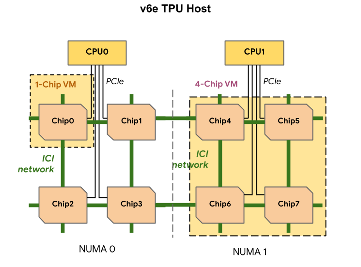

Google TPU 架构与 AI 系统
从一块矩阵在 TensorCore 中的乘加，读到 JAX 分片、Pallas 内核和多芯片上的训练与推理。
芯片与数据通路
一层神经网络里的 TPU
给语言模型两个词，每个词暂用三个数表示。线性层把三个数混合成两个新数，下一层据此继续计算。Google 的张量处理器（TPU）专门为这类重复出现的数组运算设计。主机 CPU 负责读取样本、运行 Python、提交任务。TPU 接手已经编译好的计算，在芯片旁的高带宽内存（HBM）里保存输入、权重和结果。
把两个词写成矩阵 的两行，把混合规则写成权重 的两列。每个输出由一行输入和一列权重对位相乘再相加。下式的示例数值取自教学设定，两行分别对应两个词。
输出左上角的 5 来自第一行输入的 1、2、3 分别乘第一列的 1、2、0，即 。右下角来自第二行与第二列，即 。若层内还有偏置 ，每行都给第一列减 3、第二列加 1，得到两行 和 。ReLU 激活逐元素保留正数，把负数改成 0，最终两行是 和 。
一颗 TPU 芯片内有一个或多个 TensorCore。其中矩阵乘单元（MXU）擅长前面的成批点积，向量单元适合偏置、激活等逐元素运算，标量单元负责地址与循环控制。这里矩阵乘产生四个中间值，后续加偏置和激活各处理四个位置。
两行输入与同一份权重
把第一次出现的两个词暂称为甲、乙。只看权重的第一列 [1, 2, 0]，可以读出这一列的计算规则：保留词的第一个分量，加上第二个分量的两倍，第三个分量在这列没有贡献。第二列 [0, −1, 1] 则计算第三个分量减第二个分量。无论输入哪一个词，这两条规则都相同；每个词独占一行，所以算甲时不会混入乙的分量。
| 词 / 输出列 | 按位相乘并求和 | 加该列的偏置 | ReLU 后 |
|---|---|---|---|
| 甲 / 0 | 2 | ||
| 甲 / 1 | 2 | ||
| 乙 / 0 | 0 | ||
| 乙 / 1 | 2 |
从表的第一列也能读出矩阵维度。输入有 2 行、3 列，权重有 3 行、2 列。两个 3 相等，才有三对数可以相乘求和。留下的维度是输入的 2 行和权重的 2 列。偏置只有 2 个数，第 0 个供两行的第 0 列使用，第 1 个供第 1 列使用。这个沿着词的方向重复使用偏置的规则叫广播。
JAX 程序中的乘加、广播与激活
在 TPU VM 中，Python 程序从主机一侧运行。JAX 的数组可以放在设备上，jax.jit 让编译器看到函数里彼此相连的数组运算。先运行下面这个只含一层的小程序。第一条打印同时给出可见设备和结果，第二条打印出 JAX 准备交给后端的运算。安装了 CPU 版 JAX 的机器也能核对数字。
import jax
import jax.numpy as jnp
import numpy as np
def layer(x, w, b):
dots = jnp.matmul(x, w) # 用同一份权重处理两行输入
shifted = dots + b # b 的两个数按输出列广播
return jax.nn.relu(shifted) # 逐项截断负值，形状仍为 (2, 2)
x = jnp.array([[1, 2, 3], [0, 1, 2]], dtype=jnp.float32)
w = jnp.array([[1, 0], [2, -1], [0, 1]], dtype=x.dtype)
b = jnp.array([-3, 1], dtype=x.dtype)
run = jax.jit(layer)
y = run(x, w, b)
y.block_until_ready() # 等待本次计算结束
np.testing.assert_array_equal(np.asarray(y), [[2, 2], [0, 2]])
print(jax.devices(), y)
print(jax.make_jaxpr(layer)(x, w, b))matmul 源码中的求和维度
在 JAX 0.12.1 的 tensor_contractions.py 中，matmul 先判断两个操作数是向量还是矩阵，随后把要相乘求和的轴传给 lax.dot_general。这里的“轴”是数组里数位置的方向：二维数组的轴 0 沿行走，轴 1 沿列走。下面保留构成维度参数的那一行；a_batch、b_batch 记录另行匹配的批次轴。
a, b, (((np.ndim(a) - 1,), (np.ndim(b) - 1 - b_is_mat,)), (a_batch, b_batch)),将本例代进去：a 是 X，秩为 2，因此左边取轴 1。b 是 W，秩也为 2，b_is_mat 为真，参与整数运算相当于 1，所以右边取轴 0。两个矩阵没有额外批次轴。打印出的 dimension_numbers=(([1], [0]), ([], [])) 就是这个选择。第一对括号里的两条轴各长 3；沿这两条轴求和，才得到表中四个格子。
在同一段输出里，紧跟点积的 broadcast_in_dim 把偏置标到输出轴 1，add 对两行实施相同偏移，ReLU 内部的 max 则逐格与零比较。这里观察的是程序表达的计算。到了 TPU 上，矩阵乘单元可以成批完成点积，向量单元适合处理后续逐元素计算。要知道编译后的程序有没有把中间结果写回 HBM，需要进一步看编译结果和设备记录。
输入改动与误差定位
验算：把乙的第三个输入从 2 改成 4，哪些输出会变？
甲的输入与权重都未变，输出仍为 [2, 2]。乙的第 0 列给第三分量的权重是 0，点积仍为 2，加偏置为 −1，激活后为 0。乙的第 1 列给第三分量的权重是 1，点积从 1 增至 3，加偏置后为 4，输出变为 [0, 4]。程序里把 x 的最后一项改成 4，并相应修改断言即可验证。
如果第一轮看见乙的第 0 格是 −1，说明点积和偏置已走完，接下来应查激活；如果点积本身已经错，先打印 x @ w 并查表中的行列配对。逐阶段保留一次小输入的中间值，比只盯最终张量更容易定位出错的那一行。
Google Cloud 的 TPU 系统结构 · JAX TPU 教材的芯片结构图 · JAX 0.12.1 的 matmul 实现
脉动阵列的逐拍乘加
矩阵乘最昂贵的地方之一是反复取同一个数。上例中，输入第一行要同时与两列权重相乘。若附近两个乘加单元可以传递正在使用的数，它们就能一起使用同一份输入。脉动阵列把许多乘加单元排成规则的行列，操作数沿着相邻单元依次传递。
把阵列缩成两行两列，用输出驻留的教学布局演示数据传播。一格负责一个输出，左侧送入 ，上方送入 。每格将左来的数向右送，将上来的数向下送，并把它们的乘积累加到本格。第二行和第二列各晚一拍开始，保证来自同一个归约位置的两个数恰好相遇。
| 节拍 | 左上格 | 右上格 | 左下格 | 右下格 |
|---|---|---|---|---|
| 1 | 1 × 5，累计 5 | 待输入 | 待输入 | 待输入 |
| 2 | 2 × 7，累计 19 | 1 × 6，累计 6 | 3 × 5，累计 15 | 待输入 |
| 3 | 完成 19 | 2 × 8，累计 22 | 4 × 7，累计 43 | 3 × 6，累计 18 |
| 4 | 完成 19 | 完成 22 | 完成 43 | 4 × 8，累计 50 |
第二拍进入左上格的 2，在第三拍继续服务右上格。两格因此得到同一行的两个输出。表中还可以看到填充阵列的时间，小任务很快结束，边缘的单元才刚收到数据。真实 MXU 的装载与输出由硬件组织，表中四拍解释的是邻居复用和填充开销。以 v6e 为例，每颗芯片有一个 TensorCore，内含两个 256 行、256 列的 MXU。使用它时，应用提交张量运算，编译器选择如何切块并安排指令。
阵列边界的错拍输入
先盯住右下格。它最终要写的是第二行输入与第二列权重的点积，先配 3 和 6，再配 4 和 8。3 从阵列左侧进入第二行，6 从上方进入第二列。两者都要再走一格才到右下角。按表中从 1 开始的拍号，这两个数从第 2 拍进入边界，在第 3 拍相遇；下一对在第 4 拍到达。于是右下格依次保存 0、0、18、50。左上格第 2 拍已经装好 19，之后只需保留它。
| 拍号 | 左侧第 0 行 | 左侧第 1 行 | 上方第 0 列 | 上方第 1 列 |
|---|---|---|---|---|
| 1 | 1 | — | 5 | — |
| 2 | 2 | 3 | 7 | 6 |
| 3 | — | 4 | — | 8 |
| 4 | — | — | — | — |
第 4 拍边界已经没有新数，右下格仍能工作，因为 4 和 8 在第 3 拍已经进入阵列。再看第二拍的左下格：5 从左上格向下传，正好碰到刚从左边进入的 3，贡献 15。如果让第二行和第一行同时开始输入，3 会提前一拍到左下格，碰不到应与它相乘的 5。错开入口时刻的目的就是让相同归约下标的两个数相遇。
可执行的逐拍模型
用 row、col 表示本格的行、列，均从 0 计数。左侧操作数先因为所在行晚进入 row 拍，再向右走 col 拍；上方操作数先因为所在列晚进入 col 拍，再向下走 row 拍。相同下标 k 的一对数都在程序的第 拍出现。把等式倒过来，就能从拍号找出当前应读取的 A 列和 B 行。
A = [[1, 2], [3, 4]]
B = [[5, 6], [7, 8]]
sums = [[0, 0], [0, 0]]
active = []
for tick in range(4): # 程序从第 0 拍编号
used = 0
for row in range(2):
for col in range(2):
k = tick - row - col # 两个数到达该格时属于哪一对
if 0 <= k < 2: # 尚未到达或已经流完的格保持原值
sums[row][col] += A[row][k] * B[k][col]
used += 1
active.append(used)
print(tick + 1, [r.copy() for r in sums])
assert sums == [[19, 22], [43, 50]] and active == [1, 3, 3, 1]k = tick - row - col 编码的是传播延迟。负下标表示数据尚未到达，必须先判断范围；在 Python 中直接拿 −1 索引，会错误地读到最后一个数。更新语句只给本格的累加器加一项，所以每拍结束都能观察数组状态。第三拍的输出是 [[19, 22], [43, 18]]；第四拍只动右下格，同一拍打印就变为 [[19, 22], [43, 50]]。
填充、排空与分块形状
四个单元一共经历四拍，共有 16 个“格 × 拍”位置，真正乘加的次数按拍数是 1、3、3、1，共 8 次。教学阵列这个独立小任务的有效占用是 8/16。若保留同一阵列而将归约长度从 2 加到 8，每格要积 8 项，右下格比左上格晚 2 拍完成，共 10 拍，32 次有效乘加占 40 个位置。这说明长一点的连续工作可以摊薄开始与结束的空档。
回到 TPU 的矩阵乘，程序提供输入形状和缩并维度，后端决定真实硬件的布局、装载及调度。模型里的 50% 和 80% 都以这幅输出驻留示意为前提。要排查真实矩阵乘的效率，先看工作负载的行数、列数与归约长度，再看编译器采用的分块和设备记录。仅凭 MXU 的阵列边长，算不出这个 Python 程序在 v6e 上要跑多少拍。
练习：第 3 拍为何读不到 A 的第一行第三个数？
左上格在第 3 拍对应程序的 tick=2，row=col=0，得到 k=2。第一行只有下标 0、1，因此该格已经完成，只保留 19。右下格在同一拍的 k=0，刚好开始第一项。
高带宽内存、片上缓冲与芯片代际
HBM 容量大，存模型权重、激活和 KV 缓存。一次矩阵乘只需要眼下用到的几片数据。靠近运算单元的向量内存 VMEM 可以反复提供这些片段。向量寄存器再接过当前指令使用的数据。以 Pallas TPU 内核为例，输入窗口先从 HBM 搬到片上缓冲，内核对窗口中的向量执行计算，最后把输出窗口送回 HBM。用于循环控制、标量索引的片上空间称为 SMEM。
| 云端芯片 | 单芯片 BF16 峰值（TFLOP/s） | 单芯片 HBM 容量 | HBM 带宽（GB/s） | 读数时的硬件背景 |
|---|---|---|---|---|
| v5e | 197 | 16 GiB | 819 | 单 TensorCore，二维芯片互连 |
| v5p | 459 | 95 GiB | 2,765 | 双 TensorCore，面向较大规模训练的三维互连 |
| v6e（Trillium） | 918 | 32 GiB | 1,638 | 单 TensorCore，两个 256 × 256 MXU |
| TPU7x（Ironwood） | 2,307 | 192 GiB | 7,380 | 双 TensorCore，适合容纳更大的权重和缓存 |
峰值按一颗物理芯片计，带宽列使用十进制 GB/s，容量列沿用各云端规格表的 GiB。比如同一份 18 GiB 的权重可以装入单颗 v6e 的理论容量，却比单颗 v5e 的全部 HBM 还大。模型运行还需给缓存、激活和临时缓冲留空间。若查的是 JAX 的硬件表，要先看表头的 per TensorCore。例如表中 7X 每个 TensorCore 的 VMEM 为 64 MiB，芯片内有两核，单个核内的缓冲方案仍应按 64 MiB 安排。
JAX 的 Pallas 硬件表还分别列出第八代 8I 和 8T。两者每芯片分别有两个和一个 TensorCore，每个 TensorCore 的 VMEM 分别为 192 MiB 和 128 MiB。移植一个双缓冲内核时，先按目标核容量重新计算两个输入槽、输出和临时变量的总和，然后再比较它们的计算峰值。
从设备数组到运算单元的一个窗口
以两个 BF16 输入矩阵的逐项加法为例。设每个矩阵有 1,024 行、1,024 列，元素占 2 字节，因此每个完整输入占 2 MiB。只计算左上角 128 行、128 列时，每个输入窗口是 16,384 个数，占 32 KiB。两扇输入窗口送入 VMEM 后，向量指令取出对应位置相加，把结果装进输出窗口，最后把这 32 KiB 送回设备数组。若左输入固定为 3、右输入固定为 4，输出窗口的每格应是 7。
在一行分成多个列块的矩阵中，左上角的 128 × 128 个数在行优先的整块数组里分散为 128 段。相邻两段的起点隔着原矩阵一整行的跨度。本例是一行 1,024 个元素，跨度为 2,048 字节。将窗口在逻辑上看作一个方块，并不要求它在 HBM 中恰好是一整段连续字节。Pallas 的块规格描述这个窗口的位置与形状，后端据此安排搬运。
| 核算对象 | 计算方法 | 结果 |
|---|---|---|
| 两个 HBM 输入的有效读取 | 4 MiB | |
| 一个 HBM 输出的有效写回 | 2 MiB | |
| 一个窗口的两份输入和一份输出 | 96 KiB | |
| 两份输入各准备两槽，输出留一槽 | 160 KiB |
前两项按整道算子的总流量计，后两项按某一时刻的片上占用计。如果下一块要等上一块算完才开始搬入，运算单元会闲着。双缓冲把下一块放入另一槽，代价是两份输入各多占 32 KiB。要是计算本身已很短，先测出搬运窗口与计算窗口重叠了多少，再决定是否值得继续加槽。
按 TensorCore 查询片上容量
from jax.experimental.pallas import tpu as pltpu
for chip in [pltpu.ChipVersion.TPU_V5E, pltpu.ChipVersion.TPU_V5P,
pltpu.ChipVersion.TPU_V6E, pltpu.ChipVersion.TPU_7X]:
one = pltpu.get_tpu_info_for_chip(chip, 1)
print(chip.value, one.vmem_capacity_bytes // (1024 ** 2))第一行导入 Pallas 的 TPU 后端接口。枚举值指定要查的实体，get_tpu_info_for_chip(chip, 1) 中的 1 让查询按一个 TensorCore 给出结果。vmem_capacity_bytes 是字节数，连续除两次 1,024 才是 MiB。这段代码的四个输出依次为 128、64、128、64 MiB。它读取 JAX 版本携带的硬件信息，不会测量空闲空间。一个核能给当前内核使用多少 VMEM，还受其它活跃缓冲及编译器分配约束。
容量上限与带宽下界
先用容量判断任务能否装下，再用带宽估算搬一次要多久。假设权重为 18 GiB，v6e 的 32 GiB 物理 HBM 中，用户可分配 31.25 GiB。扣除权重剩 13.25 GiB，再预留 3 GiB 给运行时及工作区，给缓存和其他常驻张量的预算为 10.25 GiB。若一次前向真的必须从 HBM 读完这 18 GiB 权重，按 1,638 GB/s 读取的理想时间约为 11.8 毫秒。这里先用 换成字节，再除每秒 1,638×10⁹ 字节。容量用 GiB、带宽用 GB/s，两者的换算基数不同。
多个词一起参与矩阵乘时，可以让一片权重服务多行输入。总 HBM 容量没有变化，分摊到每个词的权重流量却会改变。下一次看设备规格时，把“常驻多少、此次搬多少、哪些片能重复使用”分别写在三个位置，才容易说明换芯片或改变分块究竟改善哪一项。
练习：输出也改成双槽，但运算改用 FP32
每个窗口有 16,384 个元素，FP32 每窗 64 KiB。两路输入加一路输出，每路两槽，总计 6 × 64 = 384 KiB。整矩阵一次读两份写一份的有效流量也翻倍，变为 12 MiB。槽数影响并发存活的数据量，数据类型同时影响流量和容量。
同一线性层里的标量、向量和矩阵运算
算一层线性变换时，三种工作落在不同位置。先按块号找当前应读的输入行和权重列，这些小整数用来计算地址、控制循环，由标量单元处理。矩阵乘单元（MXU）负责成片的点积，一次产生一个输出块的许多部分和。随后加偏置、比较零值做 ReLU，这些操作只需把同一列的偏置逐项加到多行输出，再逐项取较大值，适合向量单元（VPU）。一个 TensorCore 同时拥有这几类部件。
例如一行点积给出 (5, 1)，偏置是 (−3, 1)。这一行经过向量加法成为 (2, 2)，再取 ReLU 仍是 (2, 2)。矩阵乘输出在这里是下一段向量运算的输入。若两段能在同一片上窗口内衔接，只需把最终两项写回 HBM。量化、转置或布局转换若要求另一个物理排布，实际的数据路径还要看编译器为该形状生成的程序。
第八代 TPU 的训练互连与推理互连
同一种矩阵乘可以用于训练，也可以用于逐词生成，芯片间的通信却很不一样。大批量训练可以把每次传输摊到许多样本上。生成一小批词时，各层可能频繁交换很短的消息，发出后还要等它抵达，才能算下一层。同样一项带宽指标，对这两种等待的解释力不同。
Google 的 8t 侧重大规模预训练，使用三维环面互连。8i 的 Boardfly 将芯片先连成板，再按板和组扩大互连。官方结构图从 4 颗芯片组成的一块板画起，8 块板成一组，共 32 颗；36 组合在一起，对应 1,152 个物理芯片位置。Google 在同一说明中给出的活跃芯片上限是 1,024 颗。与单纯沿网格逐跳前进相比，组间长距离链路减少了跨组消息必须转发的次数。8i 也增加了用于集合通信的 CAE。面对一个逐层等待专家交换的推理作业，较短的传输路径和通信处理能力都值得单独量测。
| 官方 8t、8i 技术介绍的单芯片口径 | 8t | 8i |
|---|---|---|
| 主要负载 | 大规模预训练 | 采样、服务和推理 |
| 互连 | 三维环面 | 分层 Boardfly |
| HBM 带宽 | 6,528 GB/s | 8,601 GB/s |
| 片上 VMEM（官方表的 MB 记法） | 128 MB | 384 MB |
若只读 1 GB 连续数据，按表中带宽下界分别约为 0.153 ms、0.116 ms。跨芯片发一条小消息还涉及固定延迟，不能用这组 HBM 带宽估计。Google 随后公布的 8tx 沿用 8t 芯片，面向机密计算配置系统；8i Max 采用双芯片系统面向大上下文。选型时先明确对照的是一颗芯片、一套系统还是整个机架。
从芯片坐标算出一条环面路径
把 8t 的三维环面想成三组首尾相接的轨道，每颗芯片有三个坐标，每一步沿一个方向去相邻芯片。Google 用 8 × 8 × 16、共 1,024 颗芯片的布局比较两种拓扑。发端取 (0, 0, 0)，收端取 (7, 0, 0)。沿第一维正走要走七步，反走一步就能绕过边界到达。若收端改为 (4, 4, 8)，三个坐标都相隔各自环长的一半。最短路径也要走 4、4、8 步，共 16 跳。这里每跳是在两颗相邻芯片间经过一条边。
def hops(start, end, lengths):
pieces = []
for a, b, length in zip(start, end, lengths):
forward = abs(a - b) # 直接走过的边数
pieces.append(min(forward, length - forward)) # 或沿闭环反向走
return pieces, sum(pieces)
assert hops((0, 0, 0), (7, 0, 0), (8, 8, 16)) == ([1, 0, 0], 1)
assert hops((0, 0, 0), (4, 4, 8), (8, 8, 16)) == ([4, 4, 8], 16)代码中每个坐标都产生两个距离。length - forward 是从另一侧绕回的步数；min 选择该维的短路。每一跳只能改变一维，因此三个短路长度要相加。最远两点之间的最短距离叫网络直径。邻居之间一次传递只用 1 跳，16 跳描述这组尺寸的最远情况。
Boardfly 的板内、组内与组间连接
沿官方图 5 放大。先在一块板内圈出 4 颗芯片，每颗与另外三颗直接相连。再把一块板当成一个方框，8 个方框用铜缆互连形成一组；需要离开本组的流量还会进入光路交换机（OCS）。所以“组间直连”描述的是组这一层级，消息仍可能先从源芯片到合适的出口，再从目的组入口走到目标芯片。文档给出的同规模网络直径是 7 跳。
| 目的位置 | 路径先后 | 应观察的量 |
|---|---|---|
| 同一块板 | 源芯片、板内 ICI、目的芯片 | 单条消息完成时间 |
| 同组的另一板 | 源板出口、组内铜缆、目的板 | 是否有多条流量争用同一出口 |
| 另一组 | 离开源组、通过组间光连接、进入目的组 | 远端最慢一条消息和整组等待时间 |
一颗芯片的矩阵乘做完以后，可能还只得到一部分输出。例如两颗芯片各算出同一输出行的部分和 [2, 4] 和 [3, 1]，逐项相加后才得到 [5, 5]，两端都需要这个结果时可用归约并分发的集合操作。8i 上的 CAE 专为这类归约与同步加速。另一个场景是专家模型把 token 送到持有相应专家的芯片，多对多交换的重点是每一份输入都能到达指定目的地。CAE 的归约与 Boardfly 的消息路径分别作用于不同步骤。
训练批量与逐词生成的通信账
假设一层在算完本地部分后要等待一次跨芯片结果。一个大训练批次可以把同一次启动的固定成本分摊到很多行；在自回归生成中，本轮某层的结果常常是下一层的输入，最后一个词又决定下一个词。即使消息内容只有两行数，这次等待仍会落在关键路径上。诊断时固定消息大小，先比较邻近与跨组设备的单次延迟，再增加并发观察拥塞；随后看完整解码步中最慢的参与者到达和离开的时刻。
验算：从 16 跳降到 7 跳可以直接算出哪一项变化？
网径少 9 跳，减少 9/16，即 56.25%。一次实际请求的时间还有软件下发、序列化、链路争用和计算。要得到请求的时延变化，须用相同模型、消息和并发实际测量。
分块复用与显存带宽上界
同样读取一个权重，给一个词算点积，或者给一批词算整块输出，需要的计算量大不相同。设 为输入行数， 为每行宽度， 为输出列数。输入 形状为 ，权重 为 ，输出为 。每个输出沿 做乘加，按每次乘加算两次浮点运算，总工作量为 。
以 BF16 为例，每个元素占 2 字节。设两份输入均从 HBM 读一次，结果以 BF16 写一次，中间 FP32 累加值留在片上。用运算数除以这些字节得到算术强度，它表示每搬一字节能做多少运算。
取 ，权重一项就有 2,097,152 字节。加上输入和输出各 2,048 字节，总量为 2,101,248 字节；2,097,152 次运算对应约 1 FLOP/byte。若三个维度都取 1024，三张矩阵各占 2 MiB，工作量变为 2,147,483,648 FLOP，强度约 341.3 FLOP/byte。区别来自同一块权重在片上服务了许多行。
v5e 的规格给出 197 TFLOP/s 算力、819 GB/s 带宽。二者相除约为 240.5 FLOP/byte。这个交点左侧，理想带宽先限制速度；右侧，计算峰值先限制速度。真实程序会因重复读、对齐填充、同步或小块利用率而偏离上界。诊断时在 XProf 的 Roofline 里选中具体运算，再看它的算术强度与实际吞吐落在什么位置。
同一片 FP32 中间结果的写回代价
大小为 1024 行、1024 列的 FP32 中间结果占 4 MiB。若从 HBM 写一次又读一次，两次额外搬运共 8 MiB。即使矩阵乘的 FLOP 数保持原值，整段算子的平均算术强度也会下降。
两行输入共用一块权重
拿两行输入来算。第一行是 (1, 2)，第二行是 (3, 4)。权重的第一行是 (5, 6)，第二行是 (7, 8)。把每行输入的第一个数乘权重的第一行，就得到第一轮的两个输出。第二轮用输入的第二个数乘权重的第二行，加到原来的位置。每轮都把刚取来的两个权重用在两行输入上。
| 输入行 | 第一轮的部分和 | 第二轮增加的量 | 最终输出 |
|---|---|---|---|
| (1, 2) | |||
| (3, 4) |
若两行一起算，4 个权重各从 HBM 取一次。若分两次计算，每次只算一行且重新读取权重，就要取 8 个权重。两种排法都读 4 个输入、写 4 个输出。按 BF16 每个数 2 字节计，前者一共搬 24 字节，后者搬 32 字节。这 8 字节的差额来自重复读取同一份权重。
Pallas 矩阵乘中的部分和
JAX 官方矩阵乘教程把输出分块，再把每块点积的求和方向切成几段。代码里的 pl.program_id(2) 是第三个网格方向的编号，用它标记当前处理哪一段。nsteps 是段数。在上表中，两段的编号分别是 0 和 1。
第一段开始时，acc_ref[...] = jnp.zeros_like(acc_ref) 把片上的累加区清零。每一段都执行 acc_ref[...] += jnp.dot(...)，把这段矩阵乘的结果加进去，教程指定用 FP32 保存部分和。算完第一段，第一行留着 (5, 6)，第二段就从这两个数接着加。若每段都清零，第一行最后只剩 (14, 16)。
当段号等于 nsteps - 1 时，z_ref[...] = acc_ref[...].astype(z_ref.dtype) 把累计结果转换为输出类型，写入输出块。把写入放在最后一段，整块输出只需写回一次。
算力与带宽对应的时间下界
用 v5e 的单芯片规格估算上面两个 1024 宽的例子。运算数除以每秒能做的运算数，得到计算所需的最短时间。同理，字节数除以每秒能搬的字节数，得到搬运所需的最短时间。即使两者完全重叠，也要等较慢的一项结束。
def roofline(m, k, n):
work = 2 * m * k * n
moved = 2 * (m * k + k * n + m * n)
compute_us = work / 197e12 * 1e6
memory_us = moved / 819e9 * 1e6
return round(work / moved, 2), round(compute_us, 3), round(memory_us, 3)
for rows in (1, 1024):
print(rows, roofline(rows, 1024, 1024))输入只有一行时，计算约需 0.011 微秒，搬运约需 2.566 微秒。理想情况下也得花约 2.566 微秒把数据搬完。输入增至 1024 行时，计算约需 10.901 微秒，搬运约需 7.682 微秒。这次算力给出的时间更长。这里的时间由芯片规格和理想流量算得。在 XProf 里对照实测点时，若实际流量偏大，可沿着输出块的分配顺序检查同一权重被读了几遍。
JAX 与 Pallas 算子
JAX 的张量计算与 XLA 编译
先把第一节的线性层写成一个函数。JAX 提供数组和自动求导，XLA 把数组程序编译为目标设备可执行的程序。在已配置 JAX TPU 后端的 Linux TPU VM 上运行下面的 Python。先看 jax.devices() 给出的平台和设备数，随后把两行数据交给设备。
import jax
import jax.numpy as jnp
print(jax.devices()) # 列出当前运行时能使用的设备
x = jnp.array([[1, 2, 3], [0, 1, 2]], jnp.bfloat16)
w = jnp.array([[1, 0], [2, -1], [0, 1]], jnp.bfloat16)
b = jnp.array([-3, 1], jnp.bfloat16)
def layer(x, w, b):
return jax.nn.relu(x @ w + b) # 给每行加相同偏置，再做激活
lowered = jax.jit(layer).lower(x, w, b) # 用形状与类型确定编译输入
print(lowered.as_text()) # 查看 StableHLO 中的矩阵乘和逐元运算
executable = lowered.compile() # 为当前后端生成可执行程序
print(executable(x, w, b).block_until_ready()) # 等待结果写好，再打印两行输出lower 产生的 StableHLO 是编译中间表示。按形状追踪其中的 dot_general，沿宽度 3 归约，结果形状为 2 行、2 列。偏置有两个元素，编译器可把广播和加法表示为独立操作，再在后续优化中融合。要看优化后的计算，可用 executable.as_text() 对照。更改输入值但保留形状及类型，可重用同一个可执行程序。把输入换成三行，要为新形状准备相应的编译结果。
首次调用通常包含编译。测稳定执行时，让相同形状先完成一次，再在计时区间内调用，并在结束前等待设备完成。否则主机可能只计到了提交工作所花的时间。
数组表达式里的两行数据
先跟着第二行走一遍。输入 (0, 1, 2) 和权重的第一列 (1, 2, 0) 做点积，得到 2。和第二列 (0, −1, 1) 做点积，得到 1。给这两个位置分别加上 −3 和 1，得到 (−1, 2)。ReLU 把负数改为零，这一行最后留下 (0, 2)。第一行经过相同的三步得到 (5, 1)、(2, 2)、(2, 2)。
在中间表示里找到 dot_general。它读取输入的第 1 轴和权重的第 0 轴，两个轴都有 3 个元素，刚好组成上面的三对乘数。剩下的两个轴分别选输入的行和权重的列。再找到 broadcast_in_dim，长度为 2 的偏置沿输出的列对齐，所以每行的第一格都加 −3，第二格都加 1。
追踪、降低与编译
JAX 第一次追踪这个函数时，用形状和类型代表各个数组。即使还不知道第二行的第一个数，它也知道这行能与权重的两列做点积。jaxpr 记下函数由哪些数组操作组成。下面接着使用前一段的 layer、权重和偏置。
spec = jax.ShapeDtypeStruct((2, 3), jnp.bfloat16)
traced = jax.jit(layer).trace(spec, w, b)
print(traced.jaxpr)
lowered = traced.lower()
compiled = lowered.compile()
print(compiled(x, w, b).tolist())
print(compiled(x.at[1, 0].set(4), w, b).tolist())第一行构造了一份输入规格，告诉 JAX 将来会收到两行三列的 BF16 数据。trace 建立数组操作之间的关系，lower 把这些操作写成编译器能继续处理的形式。compile 再针对选中的设备生成可调用的程序。JAX 源码中，Lowered.compile 先调用 self._lowering.compile(**kw)，再把得到的程序和参数信息、输出结构一起装入 Compiled。因此调用 compiled(x, w, b) 时，JAX 已知道怎样把传入的数组交给它、怎样把结果还给 Python。
两次输出依次为 [[2, 2], [0, 2]] 和 [[2, 2], [3, 2]]。x.at[1, 0].set(4) 生成一个新数组，第二行变为 (4, 1, 2)。这一行的第一列点积增加 4，原先加完偏置的 −1 变成 3。形状与类型保持一致，同一份可执行程序就能处理这次变化。
编译时的分支与执行时的数值
如果把激活写成 Python 的 if x[0, 0] > 0，追踪时只有输入规格，Python 无法据此选定一个分支。逐元素选择可以用 jnp.where(x > 0, x, 0)，把比较和选择都交给数组程序。若整个批次根据一个标量选择两条计算路径，可以用 jax.lax.cond。两条路径须返回相同的输出结构及对应数组类型、形状。
模型配置中的固定开关可以用 static_argnames 标成静态参数。这时追踪阶段拿得到开关的具体值，能选定 Python 分支。改变静态值会产生另一个编译缓存条目。输入张量里的数通常每批都变，让它们作为数组参数进入程序，前一批得到的编译结果才可以继续用。
共用参数的批处理、求导与循环
JAX 的几个变换可以用在同一份函数上。先写单个样本的预测，再用 vmap 让它逐个处理一批样本。把权重和偏置放在一个字典里，JAX 会把这种由字典、元组或列表组织的数组称作 PyTree。求导后仍得到同样结构的字典，权重梯度在 w 下，偏置梯度在 b 下。
import jax
import jax.numpy as jnp
p = {"w": jnp.array(2.), "b": jnp.array(1.)}
xs, ys = jnp.array([1., 2.]), jnp.array([2., 3.])
def single(p, x):
return x * p["w"] + p["b"]
predict = jax.vmap(single, in_axes=(None, 0))
def loss(p):
return jnp.mean((predict(p, xs) - ys)**2) / 2
def step(p, _):
value, grad = jax.value_and_grad(loss)(p)
p = jax.tree.map(lambda v, g: v - 0.2 * g, p, grad)
return p, value
end, losses = jax.jit(lambda p: jax.lax.scan(step, p, None, length=2))(p)
print(end, losses)in_axes=(None, 0) 表示所有样本共用同一份参数，输入沿第 0 轴取值。初始预测是 (3, 5)，比目标 (2, 3) 分别多出 1 和 2。平方后求均值再除以 2，损失为 1.25。权重梯度是 ，偏置梯度为 1.5。tree.map 同时更新这两项，第一步后参数变为 (1.5, 0.7)。
scan 把本步返回的第一个结果当作下一步的参数，把每次的第二个结果沿新轴叠成数组。第二步开始时预测变成 (2.2, 3.7)，损失降至 0.1325。循环结束时参数约为 (1.34, 0.61)。在编译区里写长循环时，这个写法可以保留一个循环体。跨步传递的状态在各步必须保持相同的数组形状和类型。
随机键与设备上的中间值
随机采样、丢弃和参数初始化可用 key = jax.random.key(0) 创建起始键。执行 key, use = jax.random.split(key)，本步把 use 传给随机操作，下一步继续切分保留下来的 key。键也是函数参数和返回值的一部分，因此固定起始键与调用顺序，就能重放用到的随机数。编译区中要查看本步实际得到的损失，可用 jax.debug.print("loss={v}", v=value)，调试后移除打印再测稳定时间。
TorchTPU 的逐算子调试与图编译
对已有 PyTorch 模型，TorchTPU 提供另一条 TPU 执行路径。先在 eager 模式查看中间张量，逐算子确认形状与数值，再让 torch.compile 组织较大计算区域。Google 公布的集成还包括 Hugging Face Transformers、Diffusers 和 TorchTitan，分别对应模型推理、扩散模型以及分布式训练。
沿用第一节的两行输入，把权重与偏置放到 TPU。用 eager 模式先取未加偏置的结果，检查两行应为 、。再检查激活前第二行第一列应为 −1，激活后为 0。这样一旦编译版本和参考结果不同，可定位到矩阵乘、广播或激活。上层权重排布也要核对，例如 PyTorch 的 nn.Linear 权重按“输出特征、输入特征”保存；若已有的是三行两列的 ，复制给 3 入、2 出的线性层时应提供其转置。
在 TorchTPU 环境中，编译前后保持输入位置、精度和批形状一致。第一次编译时间可单独记录，稳定阶段用设备同步后的时间。高层模型可复用现有框架的分词、采样及服务 API；性能定位时要回到 TPU 实际运行的图、数据布局和服务后端。例如 TorchTPU 的 vLLM 文档给出了分页注意力后端与其适用的模型头布局。
单个算子的中间张量
在装有 TorchTPU 的 TPU VM 上运行下面的代码。device 决定张量放在哪里，x.new_tensor 让权重和偏置沿用输入的设备和类型。这里用小整数和 FP32，便于逐格核对。
import torch
import torch_tpu
device = torch.device("tpu")
x = torch.tensor([[1, 2, 3], [0, 1, 2]], device=device, dtype=torch.float32)
w = x.new_tensor([[1, 0], [2, -1], [0, 1]])
b = x.new_tensor([-3, 1])
def layer(x, w, b):
return torch.relu(x @ w + b)
dots = x @ w
before_relu = dots + b
eager = layer(x, w, b)
print(dots.cpu(), before_relu.cpu(), eager.cpu())| 输入行 | 矩阵乘得到的两个数 | 两列分别加 −3、1 | 激活输出 |
|---|---|---|---|
| (1, 2, 3) | |||
| (0, 1, 2) |
用 .cpu() 取回结果时，主机得等相应张量算完才能打印。把这三次复制放在检查中间结果的地方。计时循环里做同样的事，每一轮都会多出等待和回传。
整张计算图与参考结果
把同一个函数交给 Dynamo 捕获。它沿着 Python 张量运算记录一张 FX 图，将图交给 TPU 后端转换和编译。编译器能同时看到乘法、偏置和激活，才有机会安排相邻操作共用中间结果。
compiled = torch.compile(layer, backend="tpu", fullgraph=True)
actual = compiled(x, w, b)
expected = x.new_tensor([[2, 2], [0, 2]])
torch.testing.assert_close(eager, expected)
torch.testing.assert_close(actual, expected)第一次执行 compiled(x, w, b) 才触发该组参数对应的编译。fullgraph=True 要求这个函数捕获成一张图，遇到中断会在调用时报告原因。调试用的打印和回传都放在函数外。两条断言分别把逐算子结果和编译结果对照手算值，这样即使两个版本共用了一份填错的权重，也能发现错误。
线性层权重的两种排法
在 x @ w 的写法里，一个输出用一列权重。torch.nn.Linear(3, 2) 则把每个输出用的三个系数存在同一行。把上述权重迁入模块时，第一行应填 (1, 2, 0)，第二行应填 (0, −1, 1)。torch.nn.functional.linear(x, w.T, b) 直接采用这份排法，返回的张量就是表中“加偏置”这一列。最后再调用 ReLU，第二行第一个数才从 −1 变为 0。
TorchTPU 的优化与训练框架集成 · TorchTPU 的模型与计算后端 · TorchTPU 的 eager 与图编译 · TPU VM 入门环境
Pallas 的程序网格与数组窗口
当默认生成的算子在目标形状上留下了大量无用搬运，可以用 Pallas 指明每次处理的数组窗口。先写一个把矩阵的每个元素加倍再加一的算子。用 16 行、256 列的 FP32 输入，切成四片，每片 8 行、128 列。这个形状与 TPU 的向量布局相配，重点是看清程序编号和元素地址的关系。
import jax
import jax.numpy as jnp
from jax.experimental import pallas as pl
def affine_tile(x_ref, out_ref):
values = x_ref[...] # 读当前 8 行、128 列的输入窗口
out_ref[...] = 2 * values + 1 # 写同一位置的输出窗口
spec = pl.BlockSpec((8, 128), lambda i, j: (i, j))
affine = pl.pallas_call(affine_tile, grid=(2, 2),
in_specs=(spec,), out_specs=spec,
out_shape=jax.ShapeDtypeStruct((16, 256), jnp.float32))
x = jnp.arange(16 * 256, dtype=jnp.float32).reshape(16, 256)
y = affine(x)
print(y[8, 128].block_until_ready())grid=(2,2) 给出四组块坐标，行和列编号均从 0 开始。BlockSpec 中的函数返回块号，然后依据窗口形状换算起点。块 的起点是第 8 行、第 128 列。原数组按行填数，起点元素为 。核函数读到这个数，写出 。out_shape 描述完整结果，每次调用 affine_tile 只持有一个局部输出窗口。
块 (0, 1) 右下角的元素
这个块覆盖第 0 至 7 行、第 128 至 255 列。右下角输入为 ，输出为 4095。若把块号 1 当作列起点，第一片和第二片就会重叠，后半列会缺失。
网格坐标、窗口坐标与数组坐标
把整张数组想成一张方格纸。网格编号选中一片方格，核函数里使用的行列编号从这片的左上角重新数起。对块 (1, 0) 而言，窗口内的 (2, 3) 就是整张纸上的 (10, 3)。全局行号由块行号乘 8 再加局部行号，列号同理由块列号乘 128 再加局部列号。
| 程序坐标 | 全局行 | 全局列 | 左上角输入 | 加倍再加一 |
|---|---|---|---|---|
| (0, 0) | 0 至 7 | 0 至 127 | 0 | 1 |
| (0, 1) | 0 至 7 | 128 至 255 | 128 | 257 |
| (1, 0) | 8 至 15 | 0 至 127 | 2048 | 4097 |
| (1, 1) | 8 至 15 | 128 至 255 | 2176 | 4353 |
表中的四组编号说明要覆盖哪些数据。每个程序都能独立算出自己负责的输出，所以计算结果与四个窗口的实际执行次序无关。在核函数里，x_ref 指向本次窗口，x_ref[...] 读取这里的值。out_ref[...] = ... 则把右侧算得的整块写回。把赋值写成 out_ref = ... 只会让 Python 名字指向另一个对象。
两个输入使用不同的窗口
把“加一”换成“加上所在列的编号”。输入仍分成四块。另准备一张 8 行、256 列的偏置表，每一行都从 0 数到 255。第 0 至 7 行和第 8 至 15 行需要相同的列偏置，所以它们可以指向同一片偏置表。这样，一个程序编号就要分别换算成输入块、偏置块和输出块的地址。
import jax
import jax.numpy as jnp
from jax.experimental import pallas as pl
def transform(x_ref, bias_ref, out_ref):
out_ref[...] = 2 * x_ref[...] + bias_ref[...]
tile = pl.BlockSpec((8, 128), lambda i, j: (i, j))
stripe = pl.BlockSpec((8, 128), lambda i, j: (0, j))
apply = pl.pallas_call(
transform, grid=(2, 2), in_specs=(tile, stripe), out_specs=tile,
out_shape=jax.ShapeDtypeStruct((16, 256), jnp.float32),
interpret=True,
)
x = jnp.arange(4096, dtype=jnp.float32).reshape(16, 256)
bias = jnp.broadcast_to(jnp.arange(256, dtype=x.dtype), (8, 256))
y = apply(x, bias)
print(y[0, 0], y[0, 128], y[8, 0], y[8, 128])
assert jnp.array_equal(y, 2 * x + jnp.arange(256))看 stripe 的映射。程序 (0, 1) 和 (1, 1) 都返回偏置块 (0, 1)，读到的第一项都是 128。两者的输入块仍由 tile 决定，左上角输入分别是 128 和 2176。因此右上角窗口写出 ，右下角窗口写出 。两个输出地址各有一个写入者。最末一行用普通数组运算生成参考答案，比较全部 4096 个位置。
窗口映射的检查次序
例中的 interpret=True 让 JAX 在本机逐块执行相同的网格和引用语义，适合检查窗口选取。先用四个起点识别整块错位，再用整张数组的断言发现块内部的错误。在 TPU 上使用硬件后端时移除该参数，窗口形状、数据类型和访存还要满足 TPU 后端的要求。原始例子把最后两个窗口维度选成 8 和 128，对应 TPU 向量寄存器的子通道和通道排列。
若把 stripe 的映射也用于输出，底部两个程序便会指向顶部的输出窗口，真正的底部窗口没人写。共享只读偏置可以节省存储，输出映射则要与每个程序负责的结果位置一一对应。
标量预取与间接索引
如果要读取哪一块取决于输入数据，可以把块号数组先放进标量内存。下面只有两块，索引表填 [1, 0]，表示第一个程序要读第二块，第二个程序要读第一块。窗口形状始终固定，改变的是源窗口的起点。
import jax
import jax.numpy as jnp
from jax.experimental import pallas as pl
from jax.experimental.pallas import tpu as pltpu
def copy_selected(ids_ref, src_ref, out_ref):
out_ref[...] = src_ref[...]
bs = (8, 128)
select = pl.BlockSpec(bs, lambda i, ids: (ids[i], 0))
write = pl.BlockSpec(bs, lambda i, ids: (i, 0))
gather = pl.pallas_call(
copy_selected,
grid_spec=pltpu.PrefetchScalarGridSpec(
num_scalar_prefetch=1, grid=(2,), in_specs=(select,), out_specs=write),
out_shape=jax.ShapeDtypeStruct((16, 128), jnp.float32), interpret=True)
src = jnp.arange(16 * 128, dtype=jnp.float32).reshape((16, 128))
ids = jnp.array([1, 0], jnp.int32)
out = gather(ids, src)
print(out[0, 0], out[8, 0])
assert jnp.array_equal(out, jnp.concatenate((src[8:], src[:8])))num_scalar_prefetch=1 将第一个实参 ids 作为预取输入提供给两个索引映射以及核函数。在源映射里读 ids[i]，可以在核开始计算前确定该搬哪片数据。剩下的 src 才对应 in_specs 里的普通输入窗口。输出映射继续用程序号 i，所以最上面第一格从 0 变为 1024，第 8 行第一格从 1024 变为 0。
尾块中的有效元素
如果输入只有 13 行、130 列，而每块仍取 8 行、128 列，右下块只有 5 行、2 列是真实输入。可以先用 jnp.pad(x, ((0, 3), (0, 126))) 把输入补到 16 行、256 列，用四个完整窗口执行，再取 out[:13, :130]。对逐元素运算，补出来的格子只影响自身，最后切掉即可。若核函数要沿列求最大值，负数行补零会把最大值抬高，这时应按有效位置遮挡填充项或给它们填负无穷。若做整行平均，还要用真实的 130 列当分母。
核函数里的程序编号
窗口映射告诉搬运单元要取哪块数据。有时计算本身也依赖块号。例如要给四个窗口盖上不同的编号，可以直接在核函数里读取当前网格坐标。网格第 0 轴对应块行，第 1 轴对应块列，每行有两块，故块的编号等于块行乘 2 加块列。
import jax
import jax.numpy as jnp
from jax.experimental import pallas as pl
def mark(ref, dst):
i, j = pl.program_id(0), pl.program_id(1)
dst[...] = ref[...] + (2 * i + j)
window = pl.BlockSpec((8, 128), lambda i,j: (i,j))
mark_blocks = pl.pallas_call(mark, grid=(2,2), in_specs=(window,),
out_specs=window, out_shape=jax.ShapeDtypeStruct((16,256), jnp.int32),
interpret=True)
x = jnp.zeros((16,256), jnp.int32)
y = mark_blocks(x)
assert y[::8,::128].tolist() == [[0,1],[2,3]]
print(y[::8,::128])输入全为零，输出左上 8 行、128 列仍为 0，右上为 1，左下为 2，右下为 3。最后的切片每隔 8 行、128 列取一个位置，恰好各取一个窗口的左上角。试着只改成 pl.program_id(0)，上下两行窗口会分别标成 0 和 1。核内的 ref[0,0] 永远表示所选窗口的左上角；块号来自网格，局部行列来自窗口内部。
Pallas 分块矩阵乘与 FP32 部分和
让一个程序负责一个输出块时，两个输入块要沿共同的 轴移动。沿用第一节的 。先取前两个输入通道，它们给左上格贡献 ，右上格贡献 。随后取第三个通道，分别再加 0 和 3，第一行才成为 。同一输出在归约途中必须保留。
Pallas 把三维网格索引记成 。其中 指输出行块， 指输出列块， 指归约片。三张表的索引映射分别为 、、。这样 连续变化时，程序仍落在同一个输出窗口。下面把输入块定为 128 方阵，输入为 BF16，输出以 FP32 保存。
import jax
import jax.numpy as jnp
from jax import lax
from jax.experimental import pallas as pl
from jax.experimental.pallas import tpu as pltpu
def accumulate(a_ref, b_ref, c_ref):
@pl.when(pl.program_id(2) == 0) # 每个输出块只在第一片开始时清零
def initialize():
c_ref[...] = jnp.zeros(c_ref.shape, jnp.float32)
product = lax.dot_general(a_ref[...], b_ref[...],
(((1,), (0,)), ((), ())),
preferred_element_type=jnp.float32)
c_ref[...] = c_ref[...] + product # 累加这一片产生的 128 × 128 部分和
block = (128, 128)
mm = pl.pallas_call(accumulate, grid=(1, 1, 2),
in_specs=(pl.BlockSpec(block, lambda i, j, k: (i, k)),
pl.BlockSpec(block, lambda i, j, k: (k, j))),
out_specs=pl.BlockSpec(block, lambda i, j, k: (i, j)),
out_shape=jax.ShapeDtypeStruct(block, jnp.float32),
compiler_params=pltpu.CompilerParams(
dimension_semantics=("parallel", "parallel", "arbitrary")))
a = jnp.ones((128, 256), jnp.bfloat16)
b = jnp.concatenate([jnp.ones(block), 2 * jnp.ones(block)]).astype(jnp.bfloat16)
print(mm(a, b)[0, 0].block_until_ready())dot_general 的第一对轴号告诉编译器，把左块第 1 轴和右块第 0 轴对应相乘并累加；空的两组轴号表示没有批次轴。前两维网格可产生互不重叠的输出，第三维的更新有先后依赖。测试专门令两片权重不同：先加 128 个 1，再加 128 个 2，左上格和其余位置都应为 384。若第二片覆盖第一片就只剩 256。再用互不相同的行列值对照 lax.dot_general 的完整参考结果，可检查转置与索引错位。
输出块的归属与归约方向
把输出扩大到 256 行、256 列，分成四块。只看右上块，编号为 (0, 1)。第一次计算要用左矩阵的左上块和右矩阵的右上块。第二次沿共同的求和方向前进一步，改用左矩阵的右上块和右矩阵的右下块。这两次算的都是右上输出，必须相加。若先固定归约片再遍历所有输出，程序就得在多个尚未算完的输出之间来回切换。
在三维网格里把归约编号放在最后，同一输出的两次访问便连续出现。parallel 说明沿这一个方向改变编号，程序可以负责不同输出。arbitrary 留给会多次更新同一输出的归约方向。这个标记描述程序之间的依赖，具体由多少硬件单元同时工作还取决于编译与运行安排。
累加缓冲区与最终输出
如果最终结果也要存为 BF16，可以另留一块 FP32 临时空间。两次乘加都在这块空间里完成，最后一次才把结果舍入到 BF16。下面沿用同样的分块方式，在 JAX 解释模式下检查完整结果。
import jax
import jax.numpy as jnp
from jax import lax
from jax.experimental import pallas as pl
from jax.experimental.pallas import tpu as pltpu
block = (128, 128)
def kernel(a, b, out, acc):
k = pl.program_id(2)
@pl.when(k == 0)
def clear():
acc[...] = jnp.zeros(block, jnp.float32)
acc[...] += lax.dot_general(a[...], b[...], (((1,), (0,)), ((), ())),
preferred_element_type=jnp.float32)
@pl.when(k == 1)
def store_last():
out[...] = acc[...].astype(jnp.bfloat16)
mm = pl.pallas_call(
kernel, grid=(2, 2, 2),
in_specs=(pl.BlockSpec(block, lambda i, j, k: (i, k)),
pl.BlockSpec(block, lambda i, j, k: (k, j))),
out_specs=pl.BlockSpec(block, lambda i, j, k: (i, j)),
out_shape=jax.ShapeDtypeStruct((256, 256), jnp.bfloat16),
scratch_shapes=(pltpu.VMEM(block, jnp.float32),), interpret=True,
)
row = (1 + jnp.arange(256) // 128)[:, None]
col = (1 + 2 * (jnp.arange(256) // 128))[None, :]
a = (row * jnp.ones((1, 256))).astype(jnp.bfloat16)
b = ((1 + jnp.arange(256) // 128)[:, None] * col).astype(jnp.bfloat16)
y = mm(a, b)
ref = jnp.matmul(a, b, preferred_element_type=jnp.float32).astype(y.dtype)
assert jnp.array_equal(y, ref)
print(y[::128, ::128])核函数的第四个参数 acc 对应 scratch_shapes 请求的片上临时空间。一块 128 行、128 列的 FP32 数组占 64 KiB。clear 只在归约编号 0 执行，使下一块输出能从零开始。store_last 只在编号 1 执行，因此中途既保留了 FP32 的精度，也无需给输出数组另找位置存半成品。如果归约片增加到三片，最后一次写回的编号也要改成 2。
| 输出块 | 输入行系数 | 两片权重系数 | 第一片部分和 | 第二片增加量 | 写回 |
|---|---|---|---|---|---|
| 左上 | 1 | 1、2 | 128 | 256 | 384 |
| 右上 | 1 | 3、6 | 384 | 768 | 1152 |
| 左下 | 2 | 1、2 | 256 | 512 | 768 |
| 右下 | 2 | 3、6 | 768 | 1536 | 2304 |
例如右下块中的每个格子先加 128 个 ，再加 128 个 。代码里的 y[::128, ::128] 从每块取左上角，得到表格最后一列的四个数。四块结果互不相同，交换行块或列块会在这个检查中显现。array_equal 则把全部输出与普通矩阵乘逐个比较。
片上双缓冲与窗口大小
上一节的程序完成第一片后，第二片才参与累加。如果每片都等 HBM 搬运结束才开始计算，乘加单元会周期性空闲。双缓冲在 VMEM 留两个输入槽：计算组读取槽 0 时，搬运引擎往槽 1 填下一片。交替使用前要同时满足两项条件，当前槽已经填完，准备覆盖的旧槽也已读完。
| 教学时段 | 搬运通路 | 计算通路 | 允许复用的槽 |
|---|---|---|---|
| 0–3 | 第 0 片进槽 0 | 等待输入 | 槽 1 可写 |
| 3–6 | 第 1 片进槽 1 | 第 0 片计算至时刻 8 | 槽 0 仍在读 |
| 6–8 | 等待槽 0 释放 | 第 0 片继续计算 | 槽 1 已填好 |
| 8–11 | 第 2 片进槽 0 | 第 1 片计算至时刻 13 | 槽 0 已换代 |
| 13–18 | 无新片 | 第 2 片计算 | 槽 1 可复用 |
设每片搬运需 3 个时间单位、计算需 5 个，暂忽略输出写回。三片串行需要 24 个单位。表中第一片先搬 3 个单位，此后三片计算连续，共 18 个单位。这些数字供手算时序。真实程序可从 JAX 的 Pallas TPU 流水 API 建立片内计算与 HBM–VMEM 搬运，XProf 检查等待是否缩短。
128 方阵 BF16 输入块每片占 32 KiB，左、右两个操作数各开两个槽，合计 128 KiB。再加 128 方阵 FP32 累加区 64 KiB，这三个部分合计 192 KiB。扩大归约块能减少切换次数，却会增加每个槽的容量；输出、寄存器溢出和其他临时量也要留出位置。若计算已完全盖住搬运，多加一个槽主要会占用片上空间。
两条通路的占用时间
沿图里上面一行看，搬运通路从时刻 6 空闲到 8。此时第 1 片已装进槽 1，槽 0 还在给第 0 片做乘加。提前把第 2 片写入槽 0，会覆盖计算仍在使用的输入。沿下面一行看，第 1 片虽在时刻 6 就备好，也要等前一片在时刻 8 算完才能开始。这两处等待各有一个明确的占用者。
搬运完成信号与槽的复用
Pallas 的 pltpu.make_async_copy(src_ref, dst_ref, sem) 接受源窗口、目标槽和 DMA 信号量，返回一份搬运描述。start() 把这次搬运提交给设备。核函数还能继续处理另一个槽。准备读取目标槽时，通过同一份描述的 wait() 等待写入完成。JAX 源码中，start 发出 dma_start_p，wait_write 发出 dma_wait_p。前者安排工作，后者建立“可以消费这块数据”的先后关系。
例如图中时刻 3 发起片 1 的搬运，接着用槽 0 算片 0。到了时刻 8，计算切到槽 1 前先确认片 1 已就绪，再把空出来的槽 0 分配给片 2。若每次发起搬运后都马上等待，再开始处理旧槽，能与搬运重叠的那段计算也被推迟了。
两种耗时下的手算与复核
def pipeline(tiles, copy_time, compute_time):
free = [0, 0]
dma_done = compute_done = 0
for tile in range(tiles):
slot = tile % 2
copy_start = max(dma_done, free[slot])
dma_done = copy_start + copy_time
compute_start = max(dma_done, compute_done)
compute_done = compute_start + compute_time
free[slot] = compute_done
print(tile, slot, (copy_start, dma_done), (compute_start, compute_done))
return compute_done
print(pipeline(3, 3, 5))
print(pipeline(3, 5, 3))程序中的 free[slot] 是这个槽允许下次覆盖的最早时刻。copy_start 取两个数的较大值，是因为槽和搬运通路都要空出来。计算同理，要等这一片到齐，也要等前一片算完。把搬运和计算时间调换后，三片的计算区间变成 (5, 8)、(10, 13)、(15, 18)。总时长仍为 18，计算通路却在中间多等了两次。若要决定应增加每片的计算量还是减少内存读取，只看总时间分不出这两个例子。
DMA 信号量和片上工作区
下面先只搬一片数据，看清每个对象的用途。外层输入窗口放在 HBM，核函数另申请一个 VMEM 槽和一个 DMA 信号量。程序采用 JAX 0.12.1 的 TPU 解释模式，可在本地核对搬运后的数值。
import jax
import jax.numpy as jnp
from jax.experimental import pallas as pl
from jax.experimental.pallas import tpu as pltpu
def stage(x, out, slot, ready):
dma = pltpu.make_async_copy(x, slot, ready)
dma.start()
dma.wait()
out[...] = 2 * slot[...] + 1
block = (8, 128)
run = pl.pallas_call(stage, grid=(1,),
in_specs=(pl.BlockSpec(block, lambda i: (0, 0), memory_space=pltpu.HBM),),
out_specs=pl.BlockSpec(block, lambda i: (0, 0)),
scratch_shapes=(pltpu.VMEM(block, jnp.float32), pltpu.SemaphoreType.DMA),
out_shape=jax.ShapeDtypeStruct(block, jnp.float32), interpret=pltpu.InterpretParams())
a = jnp.arange(1024, dtype=jnp.float32).reshape(block)
b = run(a)
assert jnp.array_equal(b, 2*a + 1)
print(b[0, 0], b[-1, -1])scratch_shapes 的两项按顺序成为 slot 和 ready。信号量在搬运引擎与消费者之间传递完成状态，输入数值本身写到槽里。左上角 0 和右下角 1023 搬入后，逐项做加倍再加一，应分别得到 1 和 2047。这个程序只有一个槽，读之前立即等待。扩展为图中的双缓冲时，要把下一片的启动安排在当前片计算前，为两个在途槽分别跟踪完成状态。pltpu.emit_pipeline 还能依据网格与输入输出窗口安排各次传输，适用于连续迭代中重复同一搬运模式的核。
三片输入的双缓冲核
让同一个核负责 24 行、128 列，沿行切成三片。三个片依次使用槽 0、槽 1、槽 0。每个槽装 8 行 FP32 数据，占 字节，两个输入槽共 8 KiB；这里另有输出窗口。DMA 信号量也跟槽配对。下面的循环次数固定为三，Python 会在追踪时展开这三轮。
import jax
import jax.numpy as jnp
from jax.experimental import pallas as pl
from jax.experimental.pallas import tpu as tpu
tile = (8, 128)
shape = (24, 128)
def three_tiles(src, out, slot0, slot1, sem0, sem1):
slots, sems = (slot0, slot1), (sem0, sem1)
def load(k):
s = k % 2
rows = pl.ds(k * tile[0], tile[0])
dma = tpu.make_async_copy(src.at[rows, :], slots[s], sems[s])
dma.start()
return dma
current = load(0)
for k in range(3):
current.wait()
if k + 1 < 3:
following = load(k + 1)
rows = pl.ds(k * tile[0], tile[0])
out[rows, :] = 2 * slots[k % 2][...] + 1
if k + 1 < 3:
current = following
run = pl.pallas_call(
three_tiles, grid=(1,),
in_specs=(pl.BlockSpec(shape, lambda i: (0, 0), memory_space=tpu.HBM),),
out_specs=pl.BlockSpec(shape, lambda i: (0, 0)),
out_shape=jax.ShapeDtypeStruct(shape, jnp.float32),
scratch_shapes=(tpu.VMEM(tile, jnp.float32), tpu.VMEM(tile, jnp.float32),
tpu.SemaphoreType.DMA, tpu.SemaphoreType.DMA),
interpret=tpu.InterpretParams(detect_races=True),
)
x = jnp.arange(3072, dtype=jnp.float32).reshape(shape)
y = run(x)
assert jnp.array_equal(y, 2*x + 1)
print(y[::8, 0].tolist(), y[7::8, -1].tolist())先单独启动第 0 片。第 0 轮通过 current.wait() 等槽 0 填好，把第 1 片交给槽 1 的 DMA，再读取槽 0 计算。第 1 轮，槽 0 已读完，可以把第 2 片搬进来；随后读取槽 1。最后一轮只处理槽 0。pl.ds(8, 8) 表示从行 8 开始连续取 8 行，所以中间片的首个输入是 1024，输出 2049。三片首尾输出依次为 (1, 2047)、(2049, 4095)、(4097, 6143)。
解释模式启用竞争检测后，可核对三片是否取对、槽是否过早被改写。观察硬件上 DMA 与计算重叠了多久，需要看 TPU 的 XProf 时间线。规则的分块还可以交给 pltpu.emit_pipeline，让内层核只写当前窗口的计算；BlockSpec 的 pipeline_mode=pl.Buffered(buffer_count=2) 指定该参数的两个缓冲槽。
按行 softmax 的向量归约
对同一行的许多个分数做 softmax，先要找全行最大值，再求指数和。若一行能放进片上窗口，一个 Pallas 程序可以从读到写一次处理整行。沿列切成彼此独立的多个核则会得到多个局部分母，需要额外合并。下面的 TPU 教学核每次处理 8 行，每行 128 列，输入与输出为 FP32。
import jax
import jax.numpy as jnp
from jax.experimental import pallas as pl
def rows(x_ref, y_ref):
x = x_ref[...] # 八行同时驻留，列轴覆盖整行
row_max = jnp.max(x, axis=1, keepdims=True) # 每行一个最大值，形状 (8, 1)
weights = jnp.exp(x - row_max) # 各列减同一个数，限制指数大小
total = jnp.sum(weights, axis=1, keepdims=True) # 每行一个分母
y_ref[...] = weights / total # 广播回 128 列后写回整行
tile = pl.BlockSpec((8, 128), lambda i: (i, 0))
softmax_rows = pl.pallas_call(rows, grid=(2,), in_specs=(tile,), out_specs=tile,
out_shape=jax.ShapeDtypeStruct((16, 128), jnp.float32))
x = jnp.zeros((16, 128), jnp.float32).at[:, 0].set(jnp.log(2.0))
result = softmax_rows(x)
print(result[0, :2].block_until_ready())测试令每行第一列的指数权重为 2，余下 127 列各为 1。分母为 129，因此第一个结果约为 0.015504，第二个约为 0.007752。代码减去最大值后，实际使用的第一列权重是 1，其余是 1/2，分母改为 64.5，比值相同。更长的行若超出 VMEM 预算，可以按列分块保留最大值与分母，再按共同基准完成归一化；注意力一节将使用同一办法直接累计值向量。
每一行的最大值与分母
先把列数缩到四个。一行的四个分数取自然对数 ln 2、0、ln 4、0，直接取指数就得到 2、1、4、1。除以总和 8，结果依次为 1/4、1/8、1/2、1/8。实际实现先减去最大分数 ln 4，再取指数。四个权重都变为原来的四分之一，分母也缩小四倍，除完后每个位置的概率保持原值。这样最大的指数值为 1，即使在分数里同时加上 1000，计算也不会为了得到同一组概率而先求一个很大的指数。
| 列 | 原始指数 | 按本段最大值缩放 | 换用全行最大值 ln 4 | 最终概率 |
|---|---|---|---|---|
| 0、1 | 2、1 | 1、1/2 | 1/2、1/4 | 1/4、1/8 |
| 2、3 | 4、1 | 1、1/4 | 1、1/4 | 1/2、1/8 |
第一段以 ln 2 为基准，局部和为 1.5。第二段以 ln 4 为基准，局部和为 1.25。合并时第一段的每个权重再乘 1/2，它对全局分母的贡献变成 0.75。全局分母是 。若把两个局部分母直接相加，会得到 2.75，原因就是两段原来使用了不同的最大值。
行轴、列轴与广播
代码里的 axis=1 让 128 列参加同一次归约，每一行各算各的。keepdims=True 保留下长度为 1 的列轴，所以相减时第 3 行只能取到第 3 行自己的最大值。若省略它，最大值会变成长度为 8 的一维数组，右对齐广播时会拿这 8 个数去对齐 128 列，形状就对不上了。
跨窗口的数值检查
前一个测试里每行都长得一样。把不同的峰值放在首个窗口的左端和第二个窗口的右端，就能同时检查行窗口和列归约。以下代码接着使用上面的核函数 rows 和窗口 tile。
apply = pl.pallas_call(rows, grid=(2,), in_specs=(tile,), out_specs=tile,
out_shape=jax.ShapeDtypeStruct((16, 128), jnp.float32), interpret=True)
x = jnp.zeros((16, 128), jnp.float32)
x = x.at[0, 0].set(jnp.log(2.0))
x = x.at[8, -1].set(jnp.log(4.0))
y = apply(x)
print(y[0, :2], y[8, -2:])
assert jnp.allclose(y, jax.nn.softmax(x, axis=-1))
assert jnp.allclose(y.sum(axis=1), 1)第 0 行首列对应 ，相邻列是 。第 8 行末列的权重改成 4，分母变为 ，最后两项依次为 和 。剩下的全零行均匀分配为每列 。第一条断言逐项对照参考实现，第二条断言逐行核对概率之和。
多芯片计算
TPU 切片、ICI 与数据中心网络
模型或样本在一颗芯片上放不下，可以让多颗芯片共同执行。Google Cloud 把用高速芯片间互连 ICI 连接的整组 TPU 称为 Pod，从同一个 Pod 分给作业的一组芯片称为切片（slice）。v6e 芯片可按二维坐标排列。例如拓扑 2x4 有八颗芯片，Google Cloud 的配置表既列出了由一个 VM 驱动的形态，也列出了由两个 VM 驱动的形态。芯片数相同，主机进程数可以不同。


图上方是两个主机 CPU，下方 Chip0 到 Chip7 是八颗 TPU。绿色连线表示 ICI。左上角只圈住 Chip0 的边界标出一种单芯片 VM 配置，右侧较大的框标出另一种配置；边界画在同一图上，便于比较主机、虚拟机与芯片的归属。
多切片训练让多个 slice 参加同一个作业。切片内仍走 ICI，跨切片的数据要经过数据中心网络 DCN。一次张量并行矩阵乘可能每层都需要交换部分结果。如果每层必须等待的归约跨了切片，DCN 的延迟会反复出现在关键路径。把较频繁的张量并行通信放在切片内，再让不同切片处理不同样本，是一种可检验的起点。
设两组各四颗芯片分别处理微批 A、B。每层在组内交换该微批的激活，反向结束才跨组同步参数梯度。这种安排让跨组通信发生在较少的位置。作业实际能隐藏多少传输，要在时间线上查发起时刻、最后到达的参与者和消费结果的运算。拓扑标出的双向 ICI 带宽按芯片汇总，单次消息的单向速度还取决于它走的链路和同时竞争的通信。
两个切片中的一次前向与反向计算
用 8 颗芯片排成两行，每行代表一个切片，每列负责一个权重。两行都保存相同的四个权重 (1, 1, 1, 1)。切片 A 拿到样本 (1, 2, 3, 4)，目标是 8。切片 B 拿到 (4, 3, 2, 1)，目标是 12。预测值就是样本与权重的点积。每颗芯片先算自己的一项，再跟同行的三颗芯片求和。A 行把 1、2、3、4 加成 10，B 行把 4、3、2、1 也加成 10。这两次求和都在各自的切片内完成。
取每个样本的损失为预测误差平方的一半。对某个权重求导，梯度等于该样本的预测误差乘对应输入。A 的误差是 2，B 的误差是 −2。要得到两个样本的平均梯度，只需让不同切片上负责同一权重的芯片交换梯度。
| 权重编号 | 切片 A 的贡献 | 切片 B 的贡献 | 两个样本的平均值 |
|---|---|---|---|
| 0 | |||
| 1 | |||
| 2 | |||
| 3 |
逻辑网格中的两组通信
下面用八个本地 CPU 设备验证分组和数值。网格的行轴叫 data，沿它移动会更换样本。列轴叫 model，沿它移动会更换权重。部署到两组 TPU 时，需把实际设备按切片归属填入两行，逻辑轴名本身并不决定通信走哪条物理链路。
import os
os.environ["JAX_NUM_CPU_DEVICES"] = "8"
import jax
import jax.numpy as jnp
from jax.sharding import Mesh, PartitionSpec as P
import numpy as np
mesh = Mesh(np.array(jax.devices("cpu")).reshape(2, 4), ("data", "model"))
@jax.shard_map(mesh=mesh, in_specs=(P("data", "model"), P("model"), P("data")),
out_specs=(P("data"), P("model")))
def training_step(x, w, target):
partial = jnp.sum(x * w, axis=1)
prediction = jax.lax.psum(partial, "model")
local_grad = (prediction - target) * x.reshape(-1)
mean_grad = jax.lax.pmean(local_grad, "data")
return prediction, mean_grad
x = jnp.array([[1., 2., 3., 4.], [4., 3., 2., 1.]])
pred, grad = training_step(x, jnp.ones(4), jnp.array([8., 12.]))
print(pred, grad)in_specs 把样本的两维分别分给行和列。权重只沿列分，目标只沿行分。因此进入函数时每颗芯片拿到一个输入数、一个权重和本行的一个目标。psum(partial, "model") 沿列方向合并四项，同行各芯片都得到 10。pmean(local_grad, "data") 沿行方向合并两项，同列两颗都得到平均梯度。返回时只需沿 data 拼预测，沿 model 拼梯度，得到 [10, 10] 和 [−3, −1, 1, 3]。
进程可见的设备与实际切片
启动多主机作业后，jax.process_index() 标出当前进程，jax.local_devices() 给出它可直接寻址的本地设备，jax.devices() 给出分布式运行时看到的全局设备。对照 TPU 设备的 slice_index 和 coords 核实网格的物理排列。在时间线上找到前向的四方求和，再找到反向的两方平均，就能分别检查组内、跨组通信是否挡住了后续计算。
JAX 设备网格与全局数组的分片
分片首先要说清每个元素归谁。把四个 JAX 设备排成二行二列，给两条设备轴起名 data、model。逻辑数组有四行八列，让行按 data 分、列按 model 分。这样每颗设备拿到两行四列，四片拼回去仍是同一张全局数组。
| 设备网格坐标 | 全局行 | 全局列 | 本地左上角的值 |
|---|---|---|---|
| (0, 0) | 0、1 | 0–3 | 0 |
| (0, 1) | 0、1 | 4–7 | 4 |
| (1, 0) | 2、3 | 0–3 | 16 |
| (1, 1) | 2、3 | 4–7 | 20 |
import jax
import numpy as np
from jax.sharding import NamedSharding, PartitionSpec as P
mesh = jax.make_mesh((2, 2), ("data", "model"), devices=jax.devices()[:4])
layout = NamedSharding(mesh, P("data", "model")) # 两个数组轴分别对应两条网格轴
host = np.arange(32, dtype=np.float32).reshape(4, 8) # 在主机排出易核对的元素
x = jax.device_put(host, layout) # 把每个窗口交给所属设备
for shard in x.addressable_shards:
print(shard.device, shard.index, shard.data.shape) # 查看本进程可访问的全局切片在至少四个可见设备的单主机 TPU VM 上运行此例。NamedSharding 将设备集合与布局绑定。把布局换成 P("data", None) 后仍沿行分，每个分片保留全部八列。网格同一行里的两颗设备将持有同样的输入，这叫复制。检查 shard.index 可直接看到相同的切片范围；做主机间分布式作业时，进程只能枚举自己能直接访问的本地分片。
复制后的单设备字节数
切两轴时每颗设备拿 8 个 FP32，占 32 字节。仅切行时每颗拿 16 个 FP32，占 64 字节。四颗总计 256 字节，原数组本身为 128 字节，额外的一倍来自沿 model 轴复制。
一个元素的全局地址与本地地址
选全局数组第 3 行、第 6 列，从零开始编号。按行填数，该元素的值是 。每片有两行四列，第 3 行属于下半部，第 6 列属于右半部，所以它落在网格 (1, 1)。减去该设备分片的起点 (2, 4)，全局位置 (3, 6) 就变成局部位置 (1, 2)。该设备读到的两行分别是 (20, 21, 22, 23) 和 (28, 29, 30, 31)，第二行第三格正是 30。
从分片到复制的数据交换
现在把布局换成只切行。原来网格 (1, 0) 有第 2、3 行的前四列，(1, 1) 有同两行的后四列。新布局要求两边都持有完整的两行。左边需要右边的 8 个数，右边同样需要左边的 8 个数。上面一对设备也做同样的交换。按每台设备原来缺少、现在必须得到的数据计算，四台各需要补齐 32 字节。实际传输方式由运行时和拓扑决定。
import os
os.environ["JAX_NUM_CPU_DEVICES"] = "4"
import jax
import numpy as np
from jax.sharding import Mesh, NamedSharding, PartitionSpec as P
mesh = Mesh(np.array(jax.devices("cpu")).reshape(2, 2), ("data", "model"))
split = NamedSharding(mesh, P("data", "model"))
by_row = NamedSharding(mesh, P("data", None))
host = np.arange(32, dtype=np.float32).reshape(4, 8)
x = jax.device_put(host, split)
rep = jax.device_put(x, by_row)
for a in (x, rep):
for part in a.addressable_shards:
print(part.device.id, part.index, np.asarray(part.data).tolist())
np.testing.assert_array_equal(np.asarray(rep), host)device_put(host, split) 从主机数组建立分片。下一行 device_put(x, by_row) 的源已经是设备上的全局数组，现在要把已有的片重新分配。对 part 打印 index 可以看到全局范围，打印 data 可以核对落在这个范围里的具体数。复制后再找 30，它既在 (1, 0) 上，也在 (1, 1) 上，两处的本地位置都变成 (1, 6)。最后一行把全局数组取回主机，逐项检查所有元素的值和顺序。
数组轴与设备轴的对应关系
P("data", "model") 中的两个位置，分别对应数组的行轴和列轴。None 表示这个数组维度完整保留。在 P("data", None) 中，网格轴 model 没有参与切分，于是沿它移动只会遇到相同内容的副本。若改成 P(None, "model")，设备保存四行四列，同行里的两个设备保存不同列，上下两台设备保存相同列。
列分片布局中数值 30 的位置
数值 30 位于全局第 6 列。右半列范围从第 4 列开始，局部列号为 2。所有行都在本地，局部行号仍是 3。因此右侧两台设备各在 (3, 2) 保存这个数。
矩阵分片的归约与集体通信
把第一节的矩阵乘沿输出列切开，设备 0 用 的第一列算出 ，设备 1 用第二列算出 。每颗设备保存的两项已经是完整的点积。若下一层能直接消费分列结果，两列便可一直分开；若每颗芯片都要完整两列，可以做 AllGather，让每个参与者收到其他参与者已有的片段。
改成沿点积的归约轴切，令设备 0 持有前两个输入通道、设备 1 持有第三个。此时每颗都得到两行两列，数值却只是部分和。把它们算出，能看清通信为何要加法。
AllReduce 对应位置相加，每颗设备最后都拿到完整和。若下一层只需要各自的行，可以做 ReduceScatter：两份部分和经过相加，设备 0 收第一行 ，设备 1 收第二行 。归约前把同一偏置加给两份部分和会让偏置也被加两次。偏置应在结果的持有者上加一次。
| 初始持有的数据 | 下一步需要的数据 | 通信语义 |
|---|---|---|
| 不同列，点积已完整 | 每方拿到所有列 | AllGather 拼接 |
| 相同位置的不同部分和 | 每方拿到所有和 | AllReduce 求和并复制 |
| 相同位置的不同部分和 | 每方只拿一段和 | ReduceScatter 求和并分段 |
在 XLA 优化后的 HLO 查找集体通信，再把操作数形状换算成字节。一次输出重分片可能还伴随布局转置或中间缓冲；看通信前后的消费方，能判断这笔复制能否借相邻层的布局消掉。
同一个输出位置的两种算法
盯住第一行第二列。按输出列分，持有第二列权重的设备从一开始就握有完整列 (0, −1, 1)，与完整输入行 (1, 2, 3) 做点积后直接得到 1。按通道分，两台设备都在为这同一格计算。前两个通道给出 −2，第三个通道给出 3，要把它们相加才得到 1。这个区别决定通信时究竟应当拼接还是求和。
给输入补一列零，给权重补一行零，求和方向就从 3 变为 4。每台正好分到相邻的两个通道，最后补的那一项对任一输出都贡献零。
三个通信算子的本地结果
import os
os.environ["JAX_NUM_CPU_DEVICES"] = "2"
import jax
import jax.numpy as jnp
import numpy as np
from jax.sharding import Mesh, PartitionSpec as P
mesh = Mesh(np.array(jax.devices("cpu")), ("parts",))
x = jnp.array([[1, 2, 3, 0], [0, 1, 2, 0]])
w = jnp.array([[1, 0], [2, -1], [0, 1], [0, 0]])
@jax.shard_map(mesh=mesh, in_specs=(P(None, "parts"), P("parts", None)),
out_specs=(P(), P("parts", None)))
def by_channel(x_local, w_local):
partial = x_local @ w_local
full = jax.lax.psum(partial, "parts")
mine = jax.lax.psum_scatter(partial, "parts", scatter_dimension=0, tiled=True)
return full, mine
@jax.shard_map(mesh=mesh, in_specs=(P(), P(None, "parts")), out_specs=P())
def by_column(x_full, w_column):
column = x_full @ w_column
return jax.lax.all_gather(column, "parts", axis=1, tiled=True, to="invarying")
full, by_row = by_channel(x, w)
gathered = by_column(x, w)
for y in (full, by_row, gathered):
np.testing.assert_array_equal(y, [[5, 1], [2, 1]])
print([s.data.tolist() for s in y.addressable_shards])by_channel 拿到的两个本地输入分别为两行两列，二者相乘的输出也是两行两列。psum 将对应的四个位置分别相加，两台都保留整个结果。psum_scatter 也对这四个位置求和，随后沿第 0 轴分给两台，每台保留一行。tiled=True 保留二维形状，所以设备 0 的本地结果是形状 (1, 2) 的 [[5, 1]]。
by_column 让每台拿到完整输入和权重的一列。本地点积有两行一列。all_gather 的 axis=1 把两列并排拼成两行两列。to="invarying" 标明拼好的结果在这个网格轴的两台设备上相同，与 out_specs=P() 的复制布局一致。三个全局数组逐项相等，打印出来的本地数组却呈现两种布局。选择通信方式前，需要先知道下一层是每台都用完整结果，还是各用自己的那一行。
第二列偏置的重复累加
若第二列偏置为 1，把它分别加到 −2 和 3 再求和，会得到 。先相加得到 1，再由输出的持有者加一次偏置，正确结果是 2。
手动分片矩阵乘的局部核与求和
前一节按归约轴分片，两个设备会产生同一输出的不同贡献。JAX 的 shard_map 让函数体直接写局部计算，再显式调用集合通信。下面权重有四个输入通道，正好每颗负责两个，使用至少两颗可见的 TPU 设备。
import jax
import jax.numpy as jnp
from jax.sharding import NamedSharding, PartitionSpec as P
mesh = jax.make_mesh((2,), ("k",), devices=jax.devices()[:2])
@jax.shard_map(mesh=mesh, in_specs=(P(None, "k"), P("k", None)), out_specs=P())
def split_dot(a_part, b_part):
local = a_part @ b_part # 本设备只乘自己负责的两个输入通道
return jax.lax.psum(local, "k") # 沿 k 设备轴求和，两颗得到同一个输出
a = jnp.array([[1., 2., 3., 4.]])
b = jnp.array([[1., 0.], [2., -1.], [0., 1.], [1., 2.]])
a = jax.device_put(a, NamedSharding(mesh, P(None, "k"))) # 把每半行放到相应设备
b = jax.device_put(b, NamedSharding(mesh, P("k", None))) # 右矩阵按归约行匹配切分
print(split_dot(a, b).block_until_ready())第一个 P 把左矩阵的列切两段，第二个把右矩阵的行切两段，恰好是同一组归约通道。设备 0 的结果为 ，设备 1 为 。psum 合为 ，输出规格 P() 表示此逻辑结果在网格轴上复制。若改成按输出列切，在核里仍对各列执行这个求和，就会把本属于不同输出坐标的值混合。判断通信类型要先看每颗芯片手里的数代表哪一个全局位置。
设备内部的形状与局部结果
先只看第 1 台设备。传入函数之前，两个全局数组形状是 (1, 4) 和 (4, 2)。进入函数体时，这台的 a_part 只有一行 (3, 4)，b_part 只有最后两行 (0, 1)、(1, 2)。局部乘积的第一个数来自 ，第二个来自 。第 0 台算出的是同一行同两列的另两项贡献。用另一个分片函数，可以把两份未合并的数并排检查。
import os
os.environ["JAX_NUM_CPU_DEVICES"] = "2"
import jax
import jax.numpy as jnp
from jax.sharding import NamedSharding, PartitionSpec as P
mesh = jax.make_mesh((2,), ("k",), devices=jax.devices("cpu"))
@jax.shard_map(mesh=mesh, in_specs=(P(None, "k"), P("k", None)),
out_specs=P("k", None))
def contributions(a_part, b_part):
return a_part @ b_part
@jax.shard_map(mesh=mesh, in_specs=(P(None, "k"), P("k", None)), out_specs=P())
def split_dot(a_part, b_part):
return jax.lax.psum(a_part @ b_part, "k")
a = jax.device_put(jnp.array([[1., 2., 3., 4.]]), NamedSharding(mesh, P(None, "k")))
b = jax.device_put(jnp.array([[1., 0.], [2., -1.], [0., 1.], [1., 2.]]),
NamedSharding(mesh, P("k", None)))
print(contributions(a, b))
def score(a, b):
y = split_dot(a, b)
return y[0, 0] + 2 * y[0, 1]
with jax.set_mesh(mesh):
da, db = jax.grad(score, argnums=(0, 1))(a, b)
print(score(a, b), da, db)
print(split_dot(a.at[0, 3].add(1, out_sharding=a.sharding), b))contributions 的输出规格把每台的一行沿第 0 轴放入全局数组。因此打印的第一行是 (5, −2)，第二行是 (4, 11)。这张两行的表便于逐台检查。真正的输出只有一行，split_dot 用 psum 把表的两行逐列求和。
一次输入变化沿分片程序的传播
把最后一个输入从 4 改为 5，只改变设备 1 的输入片。它使用的最后一行权重是 (1, 2)，所以局部结果从 (4, 11) 增为 (5, 13)。设备 0 仍是 (5, −2)，全局结果从 (9, 9) 变为 (10, 11)。程序在更新单个元素时指定 out_sharding=a.sharding，使新数组仍按原来的通道分布。
自动求导中的权重归属
score 取第一列加第二列的两倍，原输入得到 27。最后一个输入增大 1 时，分数增加 。同理，用每一行权重的第一列加两倍第二列，得到输入梯度 (1, 0, 2, 5)。argnums=(0, 1) 还要求返回权重梯度。第一行的输入系数是 1，对应权重梯度 (1, 2)，最后一行的系数为 4，对应 (4, 8)。jax.set_mesh(mesh) 把求导和更新输入时新产生的计算也放在同一个双设备网格的上下文中。
SparseCore 的嵌入表查找与合并
推荐模型常把商品编号换成向量。表虽很大，一个用户只点了少量商品，这一步只会访问其中几行。Google 的 SparseCore 为这类不规则查找、交换和聚合提供专门的数据通路。稠密网络随后仍可由 TensorCore 执行。
设商品 1、4、7 的两维向量分别为 、、。用户 A 点击了 4、1、4，用户 B 点击了 7。按求和聚合，A 的两个 4 可合成“读一行、乘以 2”，结果是 ；B 得 。若模型选的是均值聚合，A 再除以点击次数 3。重复编号本身携带次数，预处理时要保留这一语义。
大表分布在多个分区，预处理把样本行号、ID 和权重组织成稀疏坐标，再按表行的属主分发。训练时，聚合结果进入稠密网络；反向则把相应梯度送回负责这些表行的分区。若某一分区经常溢出，应分别统计分区内 ID 总数与去重后的 ID 数。频繁重复同一商品和同时命中大量独立商品，对这两项限制的压力不同。
点击记录、表行与聚合结果
三种行号要分清。用户行号决定输出写到哪里，商品编号决定去嵌入表的哪一行取数，分区号决定向哪一方请求那行。把用户 A、B 编为 0、1。为便于手算，这里让偶数编号归分区 0，奇数编号归分区 1。把每个人的重复点击合并后，四条点击记录变成三项请求。
| 目标分区 | 用户行 | 商品编号 | 权重 | 读出的表行 | 加到用户行的值 |
|---|---|---|---|---|---|
| 0 | 0 | 4 | 2 | (2, 3) | (4, 6) |
| 1 | 0 | 1 | 1 | (1, 0) | (1, 0) |
| 1 | 1 | 7 | 1 | (0, 5) | (0, 5) |
表中的权重是这次聚合时乘在向量上的系数。商品 4 的两次点击仍然影响输出两次。若用户 B 也点击了商品 4，两人可以用同一份商品向量，但两项贡献的目标用户不同，写回时仍要区分这两行。
反向梯度回到原表的位置
假设上层传回两个用户向量的梯度，A 是 (1, 2)，B 是 (3, −1)。A 的向量含两倍商品 4，因此商品 4 的梯度是 (2, 4)。它还含一倍商品 1，商品 1 的梯度就是 (1, 2)。商品 7 只给 B 提供向量，得到 (3, −1)。下面把预处理、按分区查表、前向合并和反向累加写在同一个小程序里，便于沿一次请求核对去向。
from collections import Counter
table = {1: (1, 0), 4: (2, 3), 7: (0, 5)}
clicks = [[4, 1, 4], [7]]
requests = [[], []]
for user, ids in enumerate(clicks):
for item, weight in Counter(ids).items():
requests[item % 2].append((user, item, weight))
out = [[0, 0] for _ in clicks]
grad_out = [[1, 2], [3, -1]]
grad_table = {i: [0, 0] for i in table}
for partition in requests:
for user, item, weight in partition:
for col, value in enumerate(table[item]):
out[user][col] += weight * value
grad_table[item][col] += weight * grad_out[user][col]
print(requests, out, grad_table)Counter(ids) 只统计当前用户的编号。requests[item % 2] 决定读取哪个分区，保留下来的 user 字段决定回到哪一行。前向按 out[user] 汇总，反向按 grad_table[item] 汇总，同一个系数在两个方向都要用。若改成均值聚合，A 的两个系数分别为 2/3 和 1/3，前向输出与两份回传梯度都随之缩放。
分区容量与热门编号
OpenXLA 的 SparseCore 流程在主机端整理坐标、按分区统计请求，并检查每个分区能容纳的 ID 条目数和不同 ID 数。本例若四个不同用户都请求商品 4，分区 0 需要向四个用户提供贡献，但只涉及一个不同 ID。换成四个用户各查一个不同的偶数编号，仍是四项用户请求，却涉及四行表。按分区统计这两个量，可以看出到底是同一行被许多样本引用，还是一次要访问的表行太多。
注意力与推理服务
分块注意力的分母与值向量
注意力让当前词从已有词中取信息。对某个查询头，查询 为一行、宽 ；历史键 和值 都按位置排成 行，值的行宽记为 。当前查询逐行与键做点积，再除以 得到一行分数。将分数取指数并除以指数总和，得到各位置权重，用它们加权相加 的各行。
取 ，查询为 1，三行键分别为 ，三行值分别为 2、5、8。键与查询点积后，指数权重依次是 1、2、4。把完整分数留在 HBM 的直接做法会给每个查询保存一整行；长序列的一批查询会产生很大的二维中间表。TPU 的分块注意力让当前查询留在片上，按块读入键和值，只保留算出最终结果必需的行状态。
第一块取前两个位置。以该块最大分数 作基准，指数变为 ，分母为 ，加权分子为 。第二块只有第三个位置，最大分数升为 。旧块的量一起乘 ，旧分母变成 、旧分子变成 3。新块贡献分母 1、分子 8。合并输出为 ，与一次性计算 相同。因果遮罩让每个查询只读当前位置及之前的键，在取最大值和求和前排除未来位置。
在 MaxText 的 TPU 路径中，Tokamax Splash 可执行分块注意力。性能分析可沿 XLA 图查 QK 点积、逐行处理与加权值计算之间是否出现意外的完整分数缓冲；比较相同上下文长度和掩码下的输出误差与内存峰值。
一个查询与两列值的逐块计算
把查询的宽度设为 4，值的宽度设为 2。查询取 (2, 0, 0, 0)，三个键向量的第一个坐标依次取 0、ln 2、ln 4，其余三个坐标都填零。点积先把第一个坐标乘 2，再除以头宽 4 的平方根 2，于是仍得到 0、ln 2、ln 4。值的三行取 (2, 1)、(5, −1)、(8, 3)。输入形状依次为一行四列、三行四列和三行两列。一次读取两把键时，局部得分有一行两列，乘当前两行值后就得到一行两列的分子。
| 已读范围 | 当前基准 | 旧状态的缩放系数 | 更新后的分母 | 更新后的两列分子 |
|---|---|---|---|---|
| 位置 0、1 | ln 2 | 0 | 3/2 | (6, −1/2) |
| 位置 0、1、2 | ln 4 | 1/2 | 7/4 | (11, 11/4) |
第一块中，第二个坐标的分子是 。新块到来后，把它缩为 −1/4，再加上新位置贡献的 3，得到 11/4。最后两列分子分别除以 7/4，输出是 (44/7, 11/7)。若因果掩码只允许看到前两个位置，就在第一行状态停止，用 (6, −1/2) 除以 3/2，得到 (4, −1/3)。
片上状态与 Splash 源码
import jax
import jax.numpy as jnp
from math import sqrt
q = jnp.array([[2., 0., 0., 0.]])
k = jnp.zeros((3, 4)).at[:, 0].set(jnp.log(jnp.array([1., 2., 4.])))
v = jnp.array([[2., 1.], [5., -1.], [8., 3.]])
last = -jnp.inf
denom = 0.
numer = jnp.zeros((1, 2))
for start, end in [(0, 2), (2, 3)]:
scores = (q @ k[start:end].T) / sqrt(q.shape[-1])
peak = jnp.maximum(last, scores.max())
old_scale = jnp.exp(last - peak)
weights = jnp.exp(scores - peak)
numer = old_scale * numer + weights @ v[start:end]
denom = old_scale * denom + weights.sum()
last = peak
print(numer.tolist(), float(denom))
out = numer / denom
ref = jax.nn.softmax(q @ k.T / sqrt(4), axis=-1) @ v
assert jnp.allclose(out, ref)
print(out.tolist())last 记录已读分数的最大值，初始为负无穷。第一块至少有一个有效位置，因此第一次的 old_scale 为零。weights @ v[start:end] 将本块各位置的值按权重相加，产生与旧分子同宽的向量。weights.sum() 只生成一个数，因为这两列输出共用同一行注意力概率。
JAX 的 TPU Splash 核把 m_prev、l_prev 放在片上，分别对应旧基准与旧分母。源码中的 l_next = l_curr + alpha * l_prev 对应表中分母的更新。随后 dot_general 计算本块对所有值坐标的贡献，alpha_o 把同一个缩放系数铺到各值坐标，再更新 o_scratch_ref。这一步仍保存分子，读完最后一块才除以分母。
MaxText 的 TPU Splash 与在线归一化 · Transformer 的注意力与 KV 缓存 · JAX TPU Splash 的分母和分子更新
长序列的上下文并行与因果负载
一颗芯片存不下长序列的全部激活时，可以把不同位置交给不同芯片，这叫上下文并行。每颗芯片持有自己的查询行，当前行却可能关注其他芯片的键和值。MaxText 提供 AllGather 路径，可先把键和值收集完整，再各算本地查询。TPU Tokamax Splash 的环式路径让键值分块依次传过芯片。每收到一块，沿用上一节的最大值、分子与分母更新，就无需让所有键值同时驻留在本地。
把四个位置分给两颗芯片。按连续位置分，位置 0、1 的查询共能看 1 加 2，即 3 个键；位置 2、3 共能看 3 加 4，即 7 个键。前一颗先完成，后一颗可能成为本层结束时间的决定者。如果把首尾搭配，设备 A 取位置 0、3，设备 B 取 1、2，两者都要处理 5 个有效查询键对。这个算例数的是因果掩码允许的格子，实测还会受硬件块边界和搬运影响。
| 分配 | 设备 A 的查询与有效格数 | 设备 B 的查询与有效格数 | 最重设备 |
|---|---|---|---|
| 连续两段 | 0、1，共 3 格 | 2、3，共 7 格 | 7 格 |
| 首尾配对 | 0、3，共 5 格 | 1、2，共 5 格 | 5 格 |
重新排布后，每行仍需携带自己的真实位置和段标识。例如位置 3 与位置 0 放在同一颗芯片，只改变存储位置；因果比较仍使用原位置。调试时保存相同输入的单设备输出，将分片结果恢复到原序后逐行比较，再用时间线检查各芯片的计算时间和等待区间。
一次环式交换中的四行输出
用一个标量查询头，把四个查询都设为 1，键依次取 ln 1、ln 2、ln 4、ln 8，值依次取 2、5、8、−1。查询与键点积后，各位置未归一化的权重恰好是 1、2、4、8。把位置 0 和 3 放在 A，1 和 2 放在 B。每颗先处理本地键值，再交换一次。查询始终留在原地。
| 查询位置 | 第一轮有效的本地键 | 第二轮有效的对方键 | 最终输出 |
|---|---|---|---|
| 0（A） | 0 | 无 | |
| 1（B） | 1 | 0 | |
| 2（B） | 1、2 | 0 | |
| 3（A） | 0、3 | 1、2 |
位置 0 与位置 3 虽然同在 A，第一轮位置 0 也只能用键 0。位置 3 第一轮已见最大权重 8，第二轮带来的最大权重 4 更小，可以沿用先前的基准。位置 1 则要先读键 1，再补上键 0，两轮完成后才有完整分母。
真实位置与芯片间的键值交换
import os
os.environ["JAX_NUM_CPU_DEVICES"] = "2"
import jax
import jax.numpy as jnp
from jax.sharding import PartitionSpec as P
from jax.sharding import Mesh
import numpy as np
mesh = Mesh(np.array(jax.devices("cpu")), ("seq",))
@jax.shard_map(mesh=mesh, in_specs=(P("seq"), P("seq"), P("seq")), out_specs=P("seq"))
def attend(pos, log_weight, value):
key_pos = pos
peak = jnp.full((2, 1), -jnp.inf)
denom = numer = jnp.zeros((2, 1))
for step in range(2):
scores = jnp.where(key_pos[None, :] <= pos[:, None], log_weight, -jnp.inf)
new_peak = jnp.maximum(peak, scores.max(axis=1, keepdims=True))
scale = jnp.exp(peak - new_peak)
w = jnp.exp(scores - new_peak)
denom = scale * denom + w.sum(axis=1, keepdims=True)
numer = scale * numer + w @ value[:, None]
peak = new_peak
if step == 0:
key_pos, log_weight, value = jax.lax.ppermute(
(key_pos, log_weight, value), "seq", [(0, 1), (1, 0)])
return (numer / denom)[:, 0]
idx = jnp.array([0, 3, 1, 2])
keys = jnp.log(jnp.array([1., 2., 4., 8.]))
values = jnp.array([2., 5., 8., -1.])
in_order = attend(idx, keys[idx], values[idx])[jnp.argsort(idx)]
print(in_order)
assert jnp.allclose(in_order, jnp.array([2., 4., 44/7, 36/15]))局部函数里的 pos 始终保存本地查询的真实位置。key_pos 跟随键值一起传，ppermute 的两对编号分别指定 A 传给 B 和 B 传给 A。比较 key_pos <= pos 时，程序只使用序列位置。若错误地比较各自窗口内的下标，A 的位置 0 就可能读到 B 的位置 1。
计算分母前，where 将被遮住的分数置为负无穷，它的指数为 0。本例每行第一轮至少含有自己的键，因而第一轮更新后分母均大于零。第二轮若没有可见键，旧状态保留。返回时设备顺序是 (0, 3, 1, 2)，最后用 argsort 恢复序列顺序，再核对表里的四个结果。
预填充、逐词解码与 KV 容量
用户发来五个词。模型先读完这五个位置，计算每层各位置的键和值，把它们保存在 HBM 中。最后一个位置的输出决定首个新词，这一阶段称为预填充。模型下一轮只输入这个新词，计算其查询、键和值，让查询访问五个旧位置和它自己，然后追加一条缓存记录并产生下一个词。这一阶段称为解码。同一组权重在预填充可同时服务多个位置，解码时一个请求每轮通常只贡献一个新输入位置。
设模型有 层，每层保存 个键值头，每个头的键和值都宽 ；每个元素占 字节。一个位置的所有层要存一份键和一份值，即 字节。取教学模型 ，每位置为 4096 字节。一个请求写满 2048 个位置后占 8 MiB。四个这样的请求占 32 MiB。这是有效键值内容的总大小，按页取整与副本会改变各芯片分到的空间。真实模型应从其配置读取层数、键值头数和头宽。
| 同一请求的状态 | 本轮输入位置 | 本轮新写 KV | 轮末已有的 KV | 模型本轮输出 |
|---|---|---|---|---|
| 预填充 | 0–4 | 5 条 | 0–4 | 首个新词 A |
| 解码第 1 轮 | 5，词 A | 1 条 | 0–5 | 新词 B |
| 解码第 2 轮 | 6，词 B | 1 条 | 0–6 | 新词 C |
分组查询注意力（GQA）允许多个查询头共用一个 KV 头。例如 8 个查询头各自有注意力分布，若它们分为两组，每组读同一套 K、V，缓存公式使用 2 个 KV 头。和每查询头各存一套的做法相比，这个例子的 KV 容量变为四分之一。TPU 服务框架还可以沿设备轴切权重和缓存，遇到头数较少时需核对实际分片布局是否复制了某些头。
从提示词末位到第一个解码步
先只看一个头、一个缓存和一个标量查询。三个提示位置的查询都取 1，键取 0、ln 2、ln 4，值取 2、5、8。因果遮罩让位置 0 只看到自己，输出是 2。位置 1 用权重 1 和 2 加权前两行，结果是 4。位置 2 用三行，结果为 44/7。预填充可以把这三行的计算组织在同一批中。服务端随后用末位的隐藏状态经过输出层和选词步骤，返回第一个新词。此时缓存只含三个已处理的提示位置。
假设这个新词在下一轮产生的键为 0、值为 4，查询仍是 1。解码时原来三行 K、V 可以直接读，新增的第四行带来权重 1 和分子 4。新的注意力输出为 。一般模型里，新词的查询也随输入变化，因此对旧键的分数要按新查询重新计算。缓存保留的是旧位置的键和值。
from math import exp, log
cache = []
def consume(key, value):
cache.append((key, value))
weights = [exp(k) for k, _ in cache]
weighted = sum(w * v for w, (_, v) in zip(weights, cache))
return weighted / sum(weights)
for pos, pair in enumerate([(0., 2.), (log(2), 5.), (log(4), 8.)]):
print(pos, len(cache) + 1, consume(*pair))
print("decode", consume(log(1), 4.))
def kv_bytes(tokens, layers, kv_heads, width, element_bytes):
return tokens * layers * 2 * kv_heads * width * element_bytes
print(kv_bytes(2048, 80, 8, 128, 2) // 2**20)程序按位置依次调用 consume，方便打印每个位置看到的历史。append 将本轮计算出来的键值加入可见集合，weights 和 weighted 只为当前查询临时计算。依次输出 2、4、约 6.285714 和 6。真实模型有多层，每层保存自己投影得到的缓存。
Llama 3 70B 的缓存预算
JAX 的 TPU 推理教材给出 Llama 3 70B 的配置：80 层、64 个查询头、8 个 KV 头，每个头宽 128。按教材算例的 INT8 缓存，一个位置的键和值共占 字节，即 160 KiB。改用 BF16 后，每个元素占 2 字节，每位置为 320 KiB。2048 个有效位置共占 640 MiB。这是键值元素的合计，实际分配还要加上分页、量化参数或副本各自占用的空间。
预填充与解码分离时的交接
若预填充与解码放在不同的 TPU 组，前一组算完要把提示位置的各层 KV 交给后一组，同时传递有效长度、位置与首个新词。以上面的三位置请求为例，解码组收到长度 3，先用首个新词计算位置 3，再把新 KV 写在旧缓存之后。若把已返回的首词也算进已有长度，会跳过一格。在前面的 BF16 配置下，一个 2048 位置请求仅有效 KV 就有 640 MiB，这笔搬运会影响分开部署后的首词到下一词间隔。
vLLM JAX 的服务进程与变长批次
vLLM 接收多个用户请求，安排哪些请求在同一步推进，并管理它们各自的历史缓存。选择 Google TPU 时，服务进程还需要能找到 TPU 后端。Google Cloud 文档分别列出 vLLM、SGLang 及其 JAX、PyTorch 实现。以下沿 vLLM JAX 的快速入门，在单主机 v6e、已安装该项目 TPU 依赖、且模型目录对服务用户可读的条件下启动。把本地模型目录替换为自己已获得的模型目录。
python -c 'import jax; from vllm.platforms import current_platform; print(current_platform.get_device_name(), jax.devices())'
vllm serve /models/Llama-3.1-8B --served-model-name course-llama \
--tensor-parallel-size 1 --max-model-len 2048第一行检查 vLLM 选用的设备与 JAX 枚举的设备。服务名 course-llama 是客户端提交请求时填写的模型标识，2048 是本例的上下文上限。待服务进入就绪状态后，从另一终端提交一条补全请求。先保存完整响应，再用多请求压测区分排队时间和生成时间。
curl -s http://localhost:8000/v1/completions \
-H 'Content-Type: application/json' \
-d '{"model":"course-llama","prompt":"A tensor is","max_tokens":12,"temperature":0}'批处理持续变化：轮首有 A、B 两个解码请求，若 B 完成，下一轮其槽位就可以接纳 C。注意力要从每个槽位找到对应请求的 KV。教学中设每页容纳 4 个位置，A 的前两页是物理页 7、2，B 的第一页是页 4。A 的逻辑位置 5 除以 4，商是 1、余数是 1，要读物理页 2 的第 1 个元素（下标从 0 开始）。把 B 换成 C 时应同步更新页映射和有效长度。TorchTPU 的 Ragged Paged Attention 后端也使用按页组织的缓存处理变长请求；各后端具体布局和页大小由实现决定。
长提示能把后来的解码轮挡住，分块预填充让调度器分几轮处理新提示，并在其间安排已开始生成的请求。对照两种分块大小，用同一组到达时间、输入长度与生成上限，分别看首词时延、后续词间隔和每秒交付词数。总吞吐上升时，仍可从词间隔的高分位发现少数用户的长停顿。
请求、批次槽位与 KV 物理页
读服务日志时会遇到三套编号。请求 ID 跟随一个用户直到生成结束。批次槽位只是本轮把哪个请求排在哪一行，下轮可以换人。物理页存放各层实际写出的 KV，逻辑位置要通过请求的页表才能找到物理页。A 的前 4 个位置在物理页 7，接下来的两个位置在页 2。两页在内存里分开，但注意力仍按位置 0 到 5 的顺序读取它们。
page_size = 4
pages = {"A": [7, 2], "B": [4]}
length = {"A": 6, "B": 3}
memory = {7: [10, 11, 12, 13], 2: [14, 15, None, None],
4: [20, 21, 22, None]}
def read(request, position):
if not 0 <= position < length[request]:
raise IndexError(position)
logical_page, offset = divmod(position, page_size)
return memory[pages[request][logical_page]][offset]
print([read("A", i) for i in range(length["A"])])
del pages["B"], length["B"]
pages["C"], length["C"] = [4], 1
memory[4][0] = 30
print([read("C", i) for i in range(length["C"])])
assert read("A", 5) == 15代码用一个整数代表一个位置的 KV，便于看到究竟读出了谁的数据。A 的位置 5 先由 divmod 拆成逻辑页 1 和偏移 1。查 A 的页表，逻辑页 1 对应物理页 2，再从页 2 的偏移 1 读到 15。B 离开后，这个例子把它的物理页 4 再分给 C，C 的首位置写成 30，有效长度设为 1。即使页内还留有旧的 21、22，C 的注意力也只能读取 30。此处假设 B 的页没有被其他请求或前缀缓存继续持有。
分块预填充中的每轮预算
考虑一个每轮最多处理 4 个输入位置的调度示例。A 正在解码，每轮占 1 个位置。C 刚到，有 6 个提示位置。若这一示例优先安排已有解码，首轮就给 A 分 1 个位置、给 C 分前 3 个提示位置。下一轮 A 再推进一个词，C 用余下 3 个名额读完提示。C 的首个输出词在这一轮结束时才可交付。
| 轮次 | A 本轮输入 | C 本轮输入 | C 已有 KV 长度 | C 可交付的结果 |
|---|---|---|---|---|
| 1 | 一个新词 | 提示位置 0、1、2 | 3 | 仍在预填充 |
| 2 | 一个新词 | 提示位置 3、4、5 | 6 | 首个新词 |
| 3 | 一个新词 | 刚生成的首词，位置 6 | 7 | 第二个新词 |
这份排程可以用来读服务指标。C 从到达到第二轮结束的间隔是首词时延，其中包括排队与两段预填充。A 在第一轮和第二轮结束时各得到一个词，两次交付的时间差才是它这一步的词间隔。单个非流式响应只给出整次请求的结束时刻。若要测交付间隔，客户端应使用流式响应记录到达时刻，同时核对每个响应块包含几个词。
vLLM JAX 的 TPU 服务入口 · vLLM JAX 的分块预填充与前缀缓存 · TorchTPU 的分页注意力
独立预填充池与解码池的 KV 交接
长提示主要占用预填充算力，大量短步解码则不断读取缓存与权重。把两类请求放到独立的 TPU 池后，两边可以单独扩缩容，代价是在不同池之间传送 KV。以 vLLM TorchTPU 的 Raiden 方案为例，预填充池是 KV 生产方，解码池是消费方，控制器登记池及传输信息，代理把同一用户请求转发到两个阶段。
沿前文的五词请求追踪。预填充端处理位置 0–4，生成词 A 并给出五个位置的 KV 及对应的块映射。解码端按自己的布局获得这些页，再用词 A 作为位置 5 的输入。若两池的张量并行度不同，源端的整页可能对应目标端的多个头分片；移交时除了字节和请求编号，还要恢复正确的层、头、位置归属。源页的可复用时刻取决于传输完成，目的页的可读时刻取决于接收及所需重排完成。
用前文每个词占 4096 字节 KV 的小模型估计代价。一个 2048 词提示的 KV 有 8 MiB。假设端到端有效负载带宽为 8 GiB/s，仅传这些内容至少需 秒，约 0.98 ms。握手、等待空闲目的页和重排需另外计时。在同一到达负载下，对比混合部署与两池部署的首词时延、第二词到达时间和后续词间隔；若首词已经到达而第二词明显推迟，就沿接收端和传输通道查这一段等待。
控制信息与真正传输的张量
Raiden 的示例代理收到 HTTP 请求后，先向预填充实例发出最多生成一个词的请求。预填充池把各层的 KV 写入块池，代理拿到交接参数，再将请求转到解码实例。控制器登记两个实例和传输信息。真正占带宽的是引擎间搬运的 KV 内容，代理转交请求时用到的地址和编号只说明该去哪儿找数据。部署示例中，两端使用同一个 TpuRaidenConnector，分别配置 kv_producer 与 kv_consumer 来指定传输方向。
同一缓存的两种物理排布
用一层、两个 KV 头、五个提示位置来演示。源端每个位置把两个头排在一起，用 (10, 11)、(20, 21)、(30, 31)、(40, 41)、(50, 51) 代表五条记录。目的端每个设备只放一个头。页长取 2，第一个设备分到物理页 6、1、5，第二个设备分到 4、7、2。两边都应该能按原顺序读到各自负责的那一列。
# 一层、两个头、每个头用一列数代表自己的 KV
source = [[10, 11], [20, 21], [30, 31], [40, 41], [50, 51]]
page_size = 2
page_tables = [[6, 1, 5], [4, 7, 2]]
cache = [{}, {}]
for position, row in enumerate(source):
block, offset = divmod(position, page_size)
for head, item in enumerate(row):
page = page_tables[head][block]
cache[head][page, offset] = item
def read_head(head):
return [cache[head][page_tables[head][p // page_size], p % page_size]
for p in range(len(source))]
print(read_head(0), read_head(1))
assert list(zip(read_head(0), read_head(1))) == list(map(tuple, source))以最后的位置 4 为例，divmod(4, 2) 给出逻辑页 2、偏移 0。头 0 去第一张页表的第 2 项，写入物理页 5 的开头，内容为 50。头 1 去第二张表的第 2 项，写入物理页 2 的开头，内容为 51。解码端下一步处理位置 5，将两个头新生成的 KV 分别写在同两页的偏移 1。前面的旧值留在偏移 0，可供新查询读取。
第二个词到达前的等待
沿同一个请求记录预填充结束、接收端 KV 就绪、解码被调度、第二词交付这四个时刻。假设它们依次为 10、13、17、19 毫秒，把首词交付时刻也设为 10 毫秒。首词到第二词共 9 毫秒，其中传输与整理占 3，目的端排队占 4，执行到交付占 2。即使搬运时间减半，若另外两段不变，第二词也只会提前 1.5 毫秒。用同一请求的时刻相减，才能区分增加互连带宽和增加解码容量各自会影响哪段等待。
前缀复用与分离服务的容量边界
两个请求若有相同的提示前缀，可以复用已经算好的那部分 KV，把计算从首个不同位置接着做。对于标准因果模型，相同前缀位置不会看到它后面的不同后缀。实际服务要让模型、适配器、位置处理和缓存表示相匹配，才可以安全共用物理块。
假设为了手算，每块 4 个词。请求 A 的提示是 [11,12,13,14,21,22]，请求 B 是 [11,12,13,14,31,32]。第一块四个位置完全相同，可以共享一页。各自的第二页只有两个有效位置，后缀不同，需要各自持有。原先两条请求分配四页，现在分配三页。若每个位置的有效 KV 是 4096 字节，节省一个分配页即 16 KiB。使用者都结束后才能把共享页交给其他内容。
命中四词前缀以后，B 后面两个查询仍要分别注意 5 和 6 个位置。缓存命中减少的是重新生成前四个位置的键值与中间激活；后续查询仍须读取可见历史。服务系统经常同时报告命中率与首词时延，把“复用的词数”也一并记录，就能区分大量只命中短前缀的请求和少量命中长前缀的请求。vLLM JAX 在特性表中列有前缀缓存，跨池使用时再将页是否需要网络搬运纳入预算。
共享前缀在预填充池已有、解码池尚未持有时的传输量
若需要完整物理页，第一块仍得跨池传 16 KiB。源端已经完成计算能节省重算时间，目的端有对应副本时才可进一步省去这笔传输。可把查找、固定页、传输和接收就绪分别打点核对。
整页前缀的匹配条件
把 A 的第二页也填满，追加两个词 23、24。再来一个新请求 C，前四词换成 91、92、93、94，后四词与 A 完全相同。C 的第二页虽然写着同样四个词，每个位置在计算隐藏状态时看到的前文已经改变，不能直接取 A 的第二页。vLLM 给整块建立索引时，把前一块的标识、本块词号以及模型所需的额外标识放在一起。依次查找，才能判断从开头起有多少个连续块可用。
def full_blocks(tokens, width=4):
parent = ()
for start in range(0, len(tokens) - width + 1, width):
block = tuple(tokens[start:start + width])
parent = (parent, block)
yield parent
a = [11, 12, 13, 14, 21, 22, 23, 24]
b = [11, 12, 13, 14, 31, 32]
c = [91, 92, 93, 94, 21, 22, 23, 24]
cached = set(full_blocks(a))
for request in (b, c):
hits = 0
for key in full_blocks(request):
if key not in cached:
break
hits += 1
print(hits, len(request) - 4 * hits)这里把索引写成嵌套元组，便于直接看见父块。实际实现用哈希压缩标识。full_blocks 只枚举填满的页。B 的前四词匹配，剩下两词要新算，打印 (1, 2)。C 从第一块就失配，八个词都要重新计算，打印 (0, 8)。若不同请求绑定了不同的 LoRA 适配器，还需让适配器标识参与匹配，因为同一组词也可能产生不同的 KV。
引用计数与可用空间
vLLM 的 get_computed_blocks() 先找能复用的块，allocate_slots() 为即将使用的块保留位置。设 A 正在用的首页引用计数为 1，B 命中并取得同页后，计数变成 2。A 结束，计数回到 1，B 仍能读取这一页。等 B 也释放它，计数才归零。这时物理位置可以重新分配。在真正被覆盖前，缓存索引仍可能让后来者命中它。
两个池分别持有的块
A 和 B 同时占用预填充池时，上例原始的六词 A、六词 B 共需三页。没有共享时要四页。若解码池已经有首页且能按同一缓存身份直接引用它，移交 B 时，在按整页传输的设定下只需传新后缀页 16 KiB。若解码池两页都缺，就需传 32 KiB。两种情形的预填充计算命中完全一样，传输量却相差一倍。对照两个池的命中情况以及实际发送的字节数，才能据此解释请求的等待时间。
vLLM JAX 的前缀缓存与 KV 功能 · TorchTPU 的跨池 KV 交接 · TPU 推理的历史读取 · vLLM 的前缀块索引与引用计数
草稿验证的交付词数与成本
逐词解码的前后两轮有依赖，目标模型必须看到上一个确定的词。推测解码让较便宜的草稿器先提若干词，目标模型再成批计算这些前缀需要的预测。TorchTPU 的服务实现支持从提示中寻找重复片段的 n-gram 草稿，也支持带独立草稿权重的 EAGLE-3 等方法。选法要结合当前模型、检查点和解码配置。
用贪心解码演示验收。草稿依次给 A、B、C，目标模型在此前缀的三个位置分别给 A、B、D。头两个一致，可以交付；第三个改用 D，故整轮交付 A、B、D。后续必须以 D 为前缀，依赖草稿 C 的状态不再可用。若目标模型在三个位置都同意，并同时算出了后面的一个预测，还可多交付一个词。使用随机采样时，要按相应的接受规则和目标分布纠正，直接比较两个随机样本是否相等会改变分布。
设单词普通解码用 5 ms，一轮草稿加验证用 9 ms。若每轮平均交付 3 个词，有效用时为每词 3 ms；若平均只有 1.4 个，每词约 6.43 ms。对照实验要使用相同提示、生成配置与负载，记录接受前缀长度、每轮实际交付的词数、草稿耗时、目标验证耗时和端到端词间隔。重复性强的代码输入可先试 n-gram 方法，再与需要额外权重的方案比较。
验证窗口中的条件前缀
目标模型在一个窗口内看到“已有历史＋草稿 A、B、C”。由于因果遮罩，预测第一个候选时只能用已有历史，预测第二个时能用历史和 A，预测第三个时能用历史、A 和 B。三项预测可以放进同一轮目标模型计算。若第二个候选已经错了，第三项预测用的前缀也错了，即使它碰巧与草稿第三词相同，也要从首次不一致处截断。
| 草稿 | 目标在草稿前缀上的预测 | 连续接受数 | 本轮交付 |
|---|---|---|---|
| A B C | D B C … | 0 | D |
| A B C | A B D … | 2 | A B D |
| A B C | A B C E | 3 | A B C E（仍有输出配额时） |
随机采样中的接受概率与补抽
假定某个位置只会出现甲、乙、丙。草稿器给三词的概率分别为 0.7、0.2、0.1，目标模型给 0.5、0.3、0.2。若草稿抽中甲，以 5/7 的概率接受它。这样草稿抽甲且通过验证的总概率正好是 0.5。另两个词的草稿概率都低于目标，抽到时全部接受。到这一步，三词已占去 0.5、0.2、0.1 的概率，总和为 0.8。余下 0.2 是被拒绝的情形。目标分布还给乙、丙各留了 0.1，所以拒绝后各以一半概率补抽乙或丙。
from fractions import Fraction as F
target = [F(5, 10), F(3, 10), F(2, 10)]
draft = [F(7, 10), F(2, 10), F(1, 10)]
accepted = [min(p, q) for p, q in zip(target, draft)]
rejected = 1 - sum(accepted)
gap = [max(p - q, 0) for p, q in zip(target, draft)]
correction = [v / sum(gap) for v in gap]
output = [a + rejected * c for a, c in zip(accepted, correction)]
print([str(x) for x in output])
assert output == targetaccepted 表示“抽到这个词且通过”的联合概率。gap 取目标概率比草稿概率多出的部分。除以这些缺口的总和，才得到拒绝发生之后的补抽分布。最后一行计算把两条路径相加，恰好恢复 1/2、3/10、1/5。此例中拒绝概率大于零才需要构造补抽分布。
每轮成本与真实交付词数
若采集到五轮数据，耗时都为 9 毫秒，实际交付词数依次为 1、4、2、1、2，那么平均耗时是总耗时 45 除以总词数 10，即每词 4.5 毫秒。与普通解码每词 5 毫秒相比，五轮共省 5 毫秒。交付数包括被接受的草稿和由目标补出的词，还会受到结束符或输出上限的截断。只记录草稿是否命中，会漏掉这部分影响。
训练系统与性能诊断
MaxText 的训练步与目标词
MaxText 把基于 JAX 的 Transformer 模型、输入管线、设备网格和检查点组织成一套训练程序。一次训练步先从输入管线拿到词编号，再由模型预测下一个词。训练器根据目标词的预测概率计算损失，反向求得各参数梯度，优化器用梯度写出下一版参数。JAX 对整步编译，TPU 执行相应的矩阵乘、归一化与集体通信。
取一个三词片段 [7, 3, 9]。用前一个词预测后一个词，输入的两个位置是 [7, 3]，目标是 [3, 9]。若模型给两个正确目标的概率分别为 1/2、1/4，使用自然对数，平均交叉熵为 。给这一行补齐两个位置时，应由目标权重排除补齐部分；有效分母仍是 2。两台设备有效位置数不同时，把各自的损失和与有效数分别归约，再相除，可得到全局逐词均值。
MaxText 官方入门使用合成批次先检查输入形状、设备和编译，随后再换成真实数据预训练。下面是已装好 MaxText TPU 软件的单主机训练命令，环境变量指向可写的 GCS 输出目录。模型取其默认配置，十步可产生逐步日志。
python3 -m maxtext.trainers.pre_train.train \
run_name=course-tpu-smoke base_output_directory="${BASE_OUTPUT_DIRECTORY}" \
dataset_type=synthetic steps=10 enable_checkpointing=false真实数据教程使用 dataset_type=hf、hf_path=allenai/c4、英语数据目录和训练集，配合 model_name=deepseek2-16b 与对应 tokenizer。Tokenizer 把原文切成该模型识别的 ID。换用另一张词表，即使数组形状完全相同，编号也可能指向别的词。读第一批可检查输入 ID、右移一位形成的目标、有效位置权重，再判断损失值是否可解释。
目标位置与补齐位置的梯度
把候选词缩减为两类。第一个有效位置的目标是类别 0，两类分数都为 0，因此目标概率是 1/2。第二个有效位置的目标是类别 1，两类分数为 ln 3、0。取指数得到 3 和 1，目标概率是 1/4。再补两行任意分数，并把这两行的有效标志设为零。形状由两行扩成四行，但只有原来的两个位置对训练目标有贡献。
import jax
import jax.numpy as jnp
scores = jnp.array([[0., 0.], [jnp.log(3.), 0.], [3., 4.], [7., 2.]])
target = jnp.array([0, 1, 0, 0])
valid = jnp.array([1., 1., 0., 0.])
def loss_fn(scores):
log_probs = jax.nn.log_softmax(scores, axis=-1)
token_loss = -log_probs[jnp.arange(4), target]
return (token_loss * valid).sum() / valid.sum()
loss, grad = jax.value_and_grad(loss_fn)(scores)
next_scores = scores - 0.1 * grad
print(loss, grad, loss_fn(next_scores))
assert loss_fn(next_scores) < losslog_softmax 在每个位置的两个候选词之间归一化。log_probs[jnp.arange(4), target] 每行只取目标词那一列。两个有效位置的损失分别约为 0.693 和 1.386，求和再除以有效数 2，得到约 1.040。前两行的梯度分别为 (−0.25, 0.25)、(0.375, −0.375)。后两行因有效标志为零，所有梯度都为零。
这里直接把分数当作可调整的参数。减去 0.1 倍梯度时，第一行第 0 列的分数上升 0.025，第二行第 1 列的分数上升 0.0375，两行都朝着提高正确词概率的方向变化。真实模型则把这份梯度沿网络继续往回传，更新产生这些分数的权重。
MaxText 训练步里的有效计数
在预训练源码的普通逐词损失分支中，targets_segmentation != 0 选出有效位置，xent 先按这个标志过滤，再汇总。启用单独目标掩码的路径还会结合 targets_loss_mask，使一行即便有真实词，也能只训练指定部分。total_weights 记录实际计入的目标数。常规均值分支以它加上数值保护项作为分母。训练步得到梯度后通过 state.apply_gradients 调用优化器。
不等长分片的全局损失
若设备 A 只有一个有效词，损失为 3，设备 B 有三个有效词，每个损失为 1。先算各自均值再平均会得到 2。逐词统计则是四个有效词贡献了总损失 6，全局均值为 1.5。因而对照训练日志时要一起看损失和、有效目标数。改变补齐比例后，只要有效样本相同，逐词目标就应保持一致。
Flax NNX 的图像分类与参数更新
TPU 也可以训练图像分类模型。Flax NNX 在 JAX 之上组织网络层、参数和状态，Optax 提供更新规则。Flax 官方 MNIST 教程读取手写数字图像，将像素从 0–255 缩放到 0–1，并补上单通道轴。形状变成“批量、行、列、通道”，这样卷积层能区别空间坐标和颜色通道。
沿官方模型看一张图：28 行、28 列、1 通道，第一层卷积提取 32 个通道，经过 2 × 2、步幅为 2 的平均池化后剩 14 行、14 列。第二层卷积产生 64 个通道，再次池化变为 7 行、7 列。按行展开后得到 个特征，恰好是下一层 nnx.Linear(3136, 256) 的输入宽度。最后 10 个分数各对应一种数字。训练时用标签挑出正确类计算交叉熵，推理时取最大分数所在的下标。
nnx.value_and_grad 在同一批图像上返回损失和参数梯度。nnx.Optimizer 按 nnx.Param 筛选可学习参数，使用 Optax 指定的 AdamW 等规则更新。批归一化还保留运行均值与方差，评估时使用已累计的统计量；随机丢弃在评估时关闭。把训练和评估分别编译，输入规格一致时便可反复处理新图像。验收一次更新可固定一小批图，记录更新前后输出与分类损失，再在独立测试集上统计准确率。
从一张小图到两个分类分数
把图像缩到两行两列。按行放入四个已经归一化的像素 0、1、1、0，批量取 1，通道数也取 1，所以输入形状是 (1, 2, 2, 1)。一个两行两列的平均池化窗口刚好覆盖整张图，四个数求平均得到 0.5。窗口每次移动两格，这张图只产生一个窗口，池化后形状为 (1, 1, 1, 1)。展成一行一个特征，乘一行两列的分类权重，最终得到两个分数。
from flax import nnx
import jax.numpy as jnp
import optax
class Classifier(nnx.Module):
def __init__(self):
self.weight = nnx.Param(jnp.array([[0., 0.]]))
def __call__(self, images):
pooled = nnx.avg_pool(images, window_shape=(2, 2), strides=(2, 2))
return pooled.reshape((-1, 1)) @ self.weight[...]
images = jnp.array([[[[0.], [1.]], [[1.], [0.]]]])
label = jnp.array([1])
model = Classifier()
opt = nnx.Optimizer(model, optax.sgd(0.4), wrt=nnx.Param)
def loss_fn(model):
return optax.softmax_cross_entropy_with_integer_labels(model(images), label).mean()
loss, grads = nnx.value_and_grad(loss_fn)(model)
opt.update(model, grads)
print(float(loss), model.weight[...], model(images), float(loss_fn(model)))两项权重初始都为零，两类分数也都是零。softmax 给每类各 1/2 的概率。标签是类别 1，交叉熵等于 −ln(1/2)，约 0.6931。对分数求导，两类分别为 0.5、−0.5。权重前还有一个输入特征 0.5，因此权重梯度分别为 0.25、−0.25。
nnx.Param 把这两项权重标记为可训练变量，nnx.value_and_grad 同时算出标量损失与对应梯度。opt.update(model, grads) 按学习率 0.4 减去梯度的 0.4 倍，得到新权重 (−0.1, 0.1)。同一张图此时得到 (−0.05, 0.05) 两个分数，正确类别升到第一位，损失降为约 0.6444。
MNIST 网络中的空间尺寸与通道
官方网络把一张图的局部像素交给卷积核。某个卷积通道在相邻位置使用同一组权重，因此同一种局部笔画出现在不同位置时，都能激起这个通道。32 个通道表示同一位置可得到 32 个不同特征。平均池化则把每个通道自己的两行两列合成一个数，同一窗口里不同通道彼此不相加。因此第一次池化将空间尺寸减半并保留 32 个通道，第二次保留 64 个通道。
进入全连接层时，每张图的 3136 个数排成一行，权重有 3136 行、256 列。每个输出特征都能利用图中所有位置。训练时批归一化会更新运行统计量，评估时读取累计统计量。比较更新前后分数时还要让两次都使用相同的评估设置，否则随机丢弃的变化也会反映在结果里。
数据并行、状态分片与重计算
训练所需空间包括权重、优化器状态、暂存激活和通信缓冲。数据并行让各设备持有同一模型，分别处理不同样本，再合并梯度。若状态本身占满 HBM，MaxText 可以把权重和优化器状态按 FSDP 轴切开。某层前向开始前收集该层需要的权重，算完后释放临时完整权重；反向把梯度规约并切回各自的属主。
给定一个只含 1,048,576 个元素的权重，工作权重设为 BF16，Adam 的一阶矩和二阶矩分别用 FP32 保存。工作权重占 2 MiB，两份矩各占 4 MiB，共 10 MiB。若还保留分离的 FP32 主权重，再加 4 MiB。用四颗设备均匀切这四份状态，单芯片常驻 MiB。为前向临时凑齐完整工作权重仍要安排 2 MiB 的完整张量；完整结果与本地分片能否复用同一存储要看实际内存计划。
激活是另一本账。假设每层有一个 8 MiB 的反向所需中间量，六层全留要 48 MiB。若只保留两个各 8 MiB 的边界输入，并在反向逐段重算，可把跨前反向长期保留的部分降到 16 MiB。反向重算当下仍有临时中间量。MaxText 的 remat_policy 可决定哪些激活保留、卸载或重算。先在 Memory Viewer 看峰值处最大存活缓冲，再有针对性地调整策略。代价通过相同批次的稳态步时测量。
两张设备不同有效词数的梯度平均
设备 A 有 2 个有效词，逐词梯度均为 1；B 有 6 个，逐词梯度均为 3。全局平均是 。若对两设备各自的均值做等权平均就得到 2，等于让每台设备的总权重相同，改变了训练目标。
两台设备上四个参数的一次训练
把权重 (1, 2, 3, 4) 切成两段，每台常驻两个参数。设备 A 的样本是 (1, 0, 1, 0)，设备 B 的样本是 (0, 1, 0, 1)。前向要算每个样本与全部权重的点积，因此两台先交换一段权重，各自凑齐四个数。A 算出 4，B 算出 6。以点积平方的一半为损失，A 的梯度是 4 乘自己的样本，得到 (4, 0, 4, 0)，B 的梯度是 (0, 6, 0, 6)。
两个样本等权，逐项平均得到 (2, 3, 2, 3)。设备 A 只负责前两项参数，拿到前两项梯度 (2, 3)。设备 B 拿到后两项梯度 (2, 3)。即便数值碰巧相同，它们各自更新的仍是不同参数。若学习率是 0.1，更新后的两份权重分别为 (0.8, 1.7) 和 (2.8, 3.7)。
import os
os.environ["JAX_NUM_CPU_DEVICES"] = "2"
import jax
import jax.numpy as jnp
import numpy as np
from jax.sharding import Mesh, PartitionSpec as P
mesh = Mesh(np.array(jax.devices("cpu")), ("fsdp",))
@jax.shard_map(mesh=mesh, in_specs=(P("fsdp"), P("fsdp", None)),
out_specs=P("fsdp"))
def shard_gradient(w_part, sample):
w = jax.lax.all_gather(w_part, "fsdp", axis=0, tiled=True)
def one_loss(full_w):
z = (sample @ full_w)[0]
return z * z / 2
local_grad = jax.grad(jax.checkpoint(one_loss))(w)
return jax.lax.psum_scatter(local_grad, "fsdp", tiled=True) / 2
w = jnp.array([1., 2., 3., 4.])
x = jnp.array([[1., 0., 1., 0.], [0., 1., 0., 1.]])
g = shard_gradient(w, x)
print([p.data.tolist() for p in g.addressable_shards])
assert jnp.array_equal(g, jnp.array([2., 3., 2., 3.]))all_gather 让每台的两项参数沿轴 0 拼接起来。sample 在本地只有一行，所以 one_loss 返回本机样本的损失。psum_scatter 在相同梯度位置求和，再把第 0 轴切回两段。最后除以 2 对应两台各有一个样本的设定。每台所需的一阶矩、二阶矩随后可以和各自这段权重放在一起。
前向留下的数据与反向重算
jax.checkpoint(one_loss) 给自动求导指定了重算边界。对平方求导需要前向点积的值，在这个简单式子里，从输入样本和权重再做一次点积即可得到它。深层网络里，把一组层包在这个边界内，可以用保留的层组输入重建组内中间量。若边界输入本身很大，或重算还会触发昂贵的通信，就要对照编译后的内存计划与时间线核算收益。
按时间看容量，常驻权重和优化器状态占据整步，而聚齐的权重只服务相关层，激活可能一直保留到该层反向。若一次预取两层的完整权重，两块缓冲还可能在一段时间内同时存活。将每项缓冲的起止时刻画在同一条时间线上，峰值就是同一时刻所有存活缓冲的总和。
MaxText 的流水阶段与微批间隙
把若干连续层分给一台设备或一个设备组，就构成一个流水阶段。单批样本顺序经过所有层，后一阶段必须等前一阶段产生激活。若把全局批分成多个微批，前半层处理下一批的同时，后半层可以处理上一批。TPU 上的 MaxText 分片文档给出了 GPipe 与循环流水的组织方法。
把四个微批 A、B、C、D 均分给两阶段模型，每阶段完成一个微批的前向均耗一个单位。表中忽略传输时间。A 的后半段开始时，B 的前半段已经可以运行。
| 时槽 | 1 | 2 | 3 | 4 | 5 |
|---|---|---|---|---|---|
| 前半层 | A | B | C | D | 空闲 |
| 后半层 | 空闲 | A | B | C | D |
四个微批产生八份有效阶段工作，两个阶段共有十个时槽。前向阶段的理想利用率为 。训练还要安排反向。GPipe 先排前向，再按梯度依赖排反向，尚未反传的微批要保存相应激活。把微批继续切小可减轻首尾空档所占的比例，但每次矩阵乘可复用权重的输入行数也减少。MaxText 的循环流水让每颗设备承载多个不相邻的层段，同一微批可能再次回到前面的阶段；这可缩短某些空档，同时增加阶段间传输。应一起看每阶段步时、传输暴露、激活容量和有效词吞吐。
GPipe 的前向与反向
GPipe 是训练深层网络的一种流水线方法。先把相邻的层分成几段，交给不同设备或设备组。每批样本也切成几份，一个微批离开前段后，前段就能接下一份。整批的梯度算齐后才更新参数，这样同一批里的四个微批用到同一版模型。MaxText 在真实 TPU 训练代码的 Pipeline 层实现了分阶段执行。
沿上表继续排反向。假设一次反向也占一个时槽，两个阶段的反向各自按 D、C、B、A 处理。后段可在时槽 6 对 D 求梯度，前段要等它发来 D 的激活梯度后才能开始。
| 阶段 | 6 | 7 | 8 | 9 | 10 |
|---|---|---|---|---|---|
| 前半层 | 等 D 的梯度 | D | C | B | A |
| 后半层 | D | C | B | A | 已完成 |
微批激活与阶段间梯度
取一个只有两层的模型。前半层把输入乘以 2，后半层再乘以 3。A 到 D 的输入分别为 1、2、3、4，目标都是零，损失取预测值平方的一半。因此前半层依次送出 2、4、6、8，后半层输出 6、12、18、24。
samples = [1, 2, 3, 4]
weight_a, weight_b = 2, 3
hidden = [weight_a * x for x in samples]
prediction = [weight_b * h for h in hidden]
grad_a = grad_b = 0
for i in reversed(range(len(samples))):
dy = prediction[i] # 平方损失的一阶导数
grad_b += dy * hidden[i]
dh = weight_b * dy # 后半层传给前半层
grad_a += dh * samples[i]
print(hidden, prediction)
print(grad_a / len(samples), grad_b / len(samples))以 D 为例，后段收到 8，预测 24，对这一项输出的梯度是 24。后段权重的梯度为 。传回前段的量是激活的梯度 ，前段再乘 D 的输入 4，得到前段权重梯度 288。四个微批都做完，程序除以 4，分别得到前段 135、后段 90。hidden[i] 在前向已经算好，反向仍要读，这就是流水线上需要保存微批激活的原因。
MaxText 的阶段移位与循环层段
MaxText 的 _shift_right 用 jax.lax.ppermute 沿 stage 网格轴传送数据。发送与接收的阶段编号由 perm 给定。在普通两阶段例中，前段产出的微批激活交给后段。当同一组设备还要承载第二轮不同的层时，前面一轮末段的结果需要回到首段，继续经过下一组层。get_iteration_inputs 根据当前迭代选择原始微批、相邻阶段输出或循环缓冲中的结果。多切一段层会改变这项传输的次数，比较两种流水排法时要同时数有效层计算和跨阶段传递。
MaxText 的 GPipe 与循环流水 · TPU Transformer 的训练并行 · MaxText 流水阶段的移位实现
Qwix 的量化尺度与点积
整数码本身不带原张量的单位。用一个正的尺度 表示一个整数步长所对应的真实间隔，编码时把原值除以 再舍入，解码时乘回 。尺度按整张量、通道或分组设置时，被同一尺度覆盖的数值范围不同。MaxText 集成 Qwix，将量化规则放到选定的矩阵运算上；使用其 INT8 方案的配置项包括 use_qwix_quantization=true 和 quantization=int8。
用可手算的尺度演示。输入向量 取 ，得到整数码 。权重 取 ，得到 。整数点积为 ，真实点积为 。若第一项权重改为 0.55，按相同步长仍会舍入到码 2，重构为 0.5；真实点积变为 0.7，而这次量化路径仍给 0.625。特意选择的小尺度只用于解释舍入，实际校准根据观测范围和数据类型设置尺度。
对每 128 个权重共用一个 2 字节尺度的存储方案，128 个 BF16 权重占 256 字节，换成 INT8 权重和尺度后占 130 字节，约缩为原来的 50.8%。改变分组后需一起计算尺度开销。若按归约维分组，各组整数点积要先乘回各自尺度再相加；把不同单位的整数部分和直接累加会改变结果。
调试时先记录每层的最大绝对误差和相对范数误差，再对同一输入比较模型输出及任务指标。打开量化后如果 HLO 多出大量来回转换，或同一步还有长时间跨片通信，权重体积的缩减就不会按比例反映在步时上。可以先单独测发生变化的点积，再测整步。
归约方向上两个分组的不同步长
把输入扩成四项 (1.5, −0.5, 1, −1)，仍以 0.5 为步长，四个整数码是 (3, −1, 2, −2)。权重为 (0.55, 0.25, 4, −2)。前两项较小，步长取 0.25，得到 (2, 1)。后两项步长取 2，得到 (2, −1)。两个组的第一个整数码都等于 2，解码出来一个是 0.5，另一个是 4。
| 通道 | 输入码 | 权重码 | 整数点积 | 本组每单位点积对应的原值 | 对输出的贡献 |
|---|---|---|---|---|---|
| 0、1 | (3, −1) | (2, 1) | 5 | 0.625 | |
| 2、3 | (2, −2) | (2, −1) | 6 | 6 |
恢复尺度后整行输出为 6.625。直接用浮点输入计算是 6.7，两者相差 0.075，正好等于输入 1.5 乘第一项权重被舍去的 0.05。若先把两个整数部分和加成 11，随后就找不到一个适用于这两项的原定步长。
import numpy as np
def encode(values, scale):
rounded = np.rint(np.asarray(values) / scale)
return np.clip(rounded, -127, 127).astype(np.int8)
x = np.array([1.5, -0.5, 1., -1.])
w = np.array([0.55, 0.25, 4., -2.])
sx = 0.5
qx = encode(x, sx)
partial = []
for start, sw in [(0, 0.25), (2, 2.)]:
qw = encode(w[start:start+2], sw)
dots = qx[start:start+2].astype(np.int32) @ qw.astype(np.int32)
partial.append(float(dots) * sx * sw)
print(qw, dots, partial[-1])
print(sum(partial), x @ w)rint 先把除过尺度的数放到最近的整数格点，clip 限制到本例选的对称码值范围。若尺度仍为 0.25 却要编码 40，算出的整数 160 超出上限，只能存 127，解码为 31.75。这种截断误差与 0.55 舍入到 0.5 的小误差来源不同。点积前先将码转换成 INT32，使局部累加有足够范围。
从 MaxText 配置到量化算子
在同一份 MaxText 模型配置里保留一个 BF16 参照，再在另一份配置开启 Qwix 和 INT8。对照时固定输入、模型参数和选中的矩阵层，先看实际参与点积的两个张量各沿哪一维共用尺度。按输出列设置尺度时，同一列的所有点积项能共用一次恢复系数。按输入通道分组则要像表格里那样分组处理。
用相同输入抓该层输出，找误差最大的格子，然后回到它对应的输入行和权重列。统计权重码是否集中在两个端点，并分别计算各组对该格子的误差贡献。这样才能判断应当扩大范围以减少截断，还是缩小分组以照顾幅值较小的权重。
专家路由、变长矩阵乘与回写
专家混合（MoE）为每个词选择少数几个前馈网络，每个网络称为专家。把专家放到不同的 TPU 上后，训练步新增三段工作：按路由结果整理词，送到持有对应专家权重的设备，把专家输出送回原词位置并加权。专家并行正是这种按专家分配权重的方式。
设三个词的隐藏值简化为标量 2、3、4。前两个词只去专家 0，第三个词分别以 1/4、3/4 权重去专家 0、1。专家 0 用函数 ，专家 1 用 。按专家打包，设备 0 收到词 [0,1,2] 的 [2,3,4]，产生 [4,6,8]；设备 1 只收到词 2 的 [4]，产生 [5]。还原时词 0、1 是 4、6，词 2 是 。路由表还必须保存每一行的原词号和相应权重。
| 专家 | 收到行数 | 有效输入 | 按固定容量 3 执行时的槽 |
|---|---|---|---|
| 0 | 3 | 2、3、4 | 3 个有效槽 |
| 1 | 1 | 4 | 1 个有效槽，2 个空槽 |
MaxText 在 TPU 上有按各专家真实行数组织的分组矩阵乘，例如 Tokamax Ragged Dot 或 MegaBlox 路径。上例总有效行是 4，若每个专家总按 3 行执行就会安排 6 个槽。变长执行减少空槽，代价是需要排序、维护各组边界并交换数据。当设备 0 很忙、设备 1 等待时，检查每设备的真实专家行数、最重专家与平均值之比，再对比通信和专家矩阵乘时段。多数词集中去同一专家时，单独调块大小解决不了不均衡的路由。
路由表的一行与专家输入的一行
一个词可以被两个专家选中，所以路由表的一行代表一次“词交给专家”的工作。依次登记 (词 0，专家 0)、(词 1，专家 0)、(词 2，专家 1)、(词 2，专家 0)。每项附带各自的权重。专家 0 的输入被专家 1 的一项隔开，先按专家编号稳定排序，得到原路由行号 0、1、3、2。词编号与路由权重都要服从同一个排列。
import jax
import jax.numpy as jnp
x = jnp.array([2., 3., 4.])
token = jnp.array([0, 1, 2, 2])
expert = jnp.array([0, 0, 1, 0])
gate = jnp.array([1., 1., 0.75, 0.25])
order = jnp.argsort(expert, stable=True)
ids = token[order]
rows = jnp.stack([x[ids], jnp.ones_like(x[ids])], axis=1)
weights = jnp.array([[[2.], [0.]], [[1.], [1.]]])
group_sizes = jnp.bincount(expert, length=2)
values = jax.lax.ragged_dot(rows, weights, group_sizes)[:, 0]
out = jnp.zeros_like(x).at[ids].add(gate[order] * values)
print(ids, group_sizes, values, out)
assert jnp.allclose(out, jnp.array([4., 6., 5.75]))rows 是四行两列。第一列存标量输入，第二列固定填 1，这样用权重列 (1, 1) 做点积就能表示“输入加一”。两位专家的权重合起来形状为 (2, 2, 1)，三个轴依次是专家、输入特征、输出特征。group_sizes 等于 [3, 1]，告诉 ragged_dot 前三行采用第一个专家的权重，剩余一行采用第二个专家的权重。
| 打包后行号 | 原词号 | 专家 | 点积结果 | 门控权重 | 加回该词的量 |
|---|---|---|---|---|---|
| 0 | 0 | 0 | 4 | 1 | 4 |
| 1 | 1 | 0 | 6 | 1 | 6 |
| 2 | 2 | 0 | 8 | 1/4 | 2 |
| 3 | 2 | 1 | 5 | 3/4 | 3.75 |
最后一行核心计算用 .at[ids].add(...) 按词号累加。词 2 在索引里出现两次，输出要保留 2 和 3.75 两份贡献。若改成覆盖写入，其中一份就会丢失。
专家容量与末位设备的等待
两位专家分别处理 3 和 1 行，平均每位 2 行，最重专家的负载是平均值的 1.5 倍。若专家运算时间正比于行数，两个设备从同一时刻出发，第二台算完后还要等两行的时间。变长矩阵乘可以让第二台跳过空行，但第一台的三行仍要算完。按专家查看每步的行数，再在时间线上标出最后结束的设备，可以区分空槽浪费、分配不均和跨设备搬运这三种开销。
Orbax 检查点与可恢复的训练进度
训练中断后继续更新模型，需要恢复参数、优化器状态和步号。MaxText 借助 Orbax 把这些状态按其树形结构存储到 Google Cloud Storage。若只保存参数，用它生成文本已经足够；要沿原优化轨迹继续训练，还需一阶矩、二阶矩等训练状态。同一批数据中的下一步从哪里读，则取决于数据管线的恢复机制。
假设规定每 100 步保存一次。第 200 步的状态先被截取，训练进程暂时对齐，后台再把各分片写到 GCS。若进程在第 205 步中断，且第 200 步的保存已经完整结束，重启时可以从 200 步的状态重做之后的更新。若断电时 200 步仍在写，需选择之前最近一次完整保存。先在恢复日志核对实际载入的步号，再查学习率调度、参数分片和下一批样本是否与这个位置相符。
MaxText 的 enable_checkpointing 决定是否保存，checkpoint_period 是按训练步计的周期，async_checkpointing 允许状态截取后在后台写存储。启动时，当前 run_name 已有完整检查点会优先用于续跑。显式的 load_full_state_path 可指定完整状态，load_parameters_path 可指定仅参数。另开实验用独立的运行名，更容易核对到底从哪个状态开始。
一次小规模恢复核对可保留相同随机种子、样本顺序、模型布局和数值精度。先连续执行两步，记录第二步的样本 ID、损失和少量参数值；另一次在第一步完整保存后重启，再比较对应量。若样本 ID 已经错位，要先查游标和预取队列；样本一致而更新量有差异，再查优化器与随机状态。
两次参数更新之间的检查点
用一个参数和一个动量说明完整状态的作用。初始权重为 1，动量为 0，学习率为 0.1。每次更新先将旧动量乘 0.5，再加本步梯度，用这个新动量更新权重。第一步的梯度为 2，动量变成 2，权重变成 0.8。此时保存步号 1、权重 0.8、动量 2。
第二个样本的梯度为 −1。完整恢复后，新动量为 ，权重保持 0.8。若只恢复权重，并把动量重新置零，新动量变成 −1，权重会变为 0.9。两个程序在恢复后的第一次前向可以完全相同，却从随后的一次更新开始分开。
from pathlib import Path
from tempfile import TemporaryDirectory
import numpy as np
import orbax.checkpoint as ocp
gradients = [2., -1.]
def advance(state):
i = int(state["step"])
v = 0.5 * state["momentum"] + gradients[i]
return {"weight": np.asarray(state["weight"] - 0.1 * v),
"momentum": np.asarray(v), "step": np.asarray(i + 1, dtype=np.int32)}
initial = {"weight": np.float64(1.), "momentum": np.float64(0.), "step": np.int32(0)}
first = advance(initial)
with TemporaryDirectory() as tmp, ocp.StandardCheckpointer() as writer:
path = Path(tmp) / "step-1"
writer.save(path, first)
writer.wait_until_finished()
restored = writer.restore(path, first)
resumed = advance(restored)
print(resumed)
assert np.isclose(resumed["weight"], advance(first)["weight"])step 在这个程序中同时充当下一份梯度的下标。真实输入管线若还做打乱、跨进程切片或预取，就要恢复与样本迭代器对应的状态。save 交给后台写入后，wait_until_finished() 等这一份检查点完成。restore(path, first) 用第一步状态的树形结构及各叶子的类型作为恢复目标。最后比较连续两步与恢复续算的权重，两条路径都得到 0.8。
分片恢复与已完成步号
各主机写出的文件合起来才是完整训练状态。若参数矩阵沿行分在四颗芯片上，恢复到两颗芯片时，每颗可能需要原来两个分片的数据。Orbax 可以按恢复目标指定的形状、类型和分片组织全局数组。查看已完成检查点的元数据能定位可恢复的步号，查看新设备上的本地分片才能确认它落在哪些设备上。
核对恢复结果时，先记录样本编号与使用的随机键，再比较损失，最后比较更新后的参数和优化器状态。若第二步损失吻合而更新量不同，上面的动量例子就给出了一个具体排查方向。
Tunix 的采样、组内奖励与策略更新
监督式训练有已知的目标词。强化学习后训练则先让模型写出多个回答，依据回答的质量调整某些生成动作的概率。MaxText 的 TPU 教程用 GSM8K 数学题演示 Tunix：同一提示生成多条答案，奖励函数评价这些答案，GRPO 学习器在同一组内比较相对表现。官方单主机例子使用 Llama 3.1 8B 指令模型，多主机教程使用 70B 及 Pathways 组织多主机运行。
设一道题得到四个回答，简化奖励是 [0,0,1,1]。平均奖励 0.5；若此教学算例用总体标准差 0.5 归一化，四个优势分别为 [−1,−1,1,1]。训练要把回答中的词与产生它的策略版本、采样时的对数概率和本回答的奖励对应。正优势提示优化器在相应限制下提高这些生成动作的相对概率，负优势则相反。若把外部工具的返回内容算作模型主动选的词，就会错误地把奖励归到外部文本上。
在单主机例子中，安装 MaxText 的 TPU 后训练依赖、准备对应模型参数检查点，入口为 maxtext.trainers.post_train.rl.train_rl。模型参数交给采样方后才能开始产生该版本的新回答。一次迭代可分别记录等待参数同步、实际生成、奖励计算与模型更新的时间，以及最后被训练器采用的回答数。若生成率很高而训练器缺数据，查奖励侧积压、截断或丢弃；若新权重已发布但队列仍是上一版本的回答，则需要核对队列和版本记录。
同一题的四份回答与采样概率
同一道题属于一组，是因为题目本身的难度相同，答对和答错的奖励可以直接比较。先看每份回答中的一个生成位置。旧策略在各自前文下为所选词给出的概率都设为 0.5。新策略对这四个已选词的概率依次为 0.35、0.55、0.70、0.45。这些数来自四段不同的前文，每一个都是在该段前文下选中那个词的概率，所以四个数不必相加为 1。
带裁剪的策略目标
用一个只含策略项的算例追踪更新方向。新概率除以旧概率得到概率比，大于 1 表示该生成动作变得更常见。把概率比乘以组内优势得到本项收益，再用裁剪区间 [0.8, 1.2] 限制向有利方向走得太远的收益。训练时把原收益与裁剪收益中较小的一项计入目标。
| 回答 | 优势 | 概率比 | 原收益 | 裁剪收益 | 计入值 |
|---|---|---|---|---|---|
| 甲 | −1 | 0.7 | −0.7 | −0.8 | −0.8 |
| 乙 | −1 | 1.1 | −1.1 | −1.1 | −1.1 |
| 丙 | 1 | 1.4 | 1.4 | 1.2 | 1.2 |
| 丁 | 1 | 0.9 | 0.9 | 0.9 | 0.9 |
丙的回答得奖，提高其概率能增加收益，但本例超过 1.2 的那部分收益会被截住。甲的优势为负，降低其概率才是有利方向，所以超出范围的是 0.7 这一侧。四项取平均得到 0.05。若使用最小化损失的优化器，就把策略损失写成 −0.05。
import numpy as np
reward = np.array([0., 0., 1., 1.])
adv = (reward - reward.mean()) / reward.std()
old_prob = np.full(4, 0.5)
new_prob = np.array([0.35, 0.55, 0.70, 0.45])
ratio = np.exp(np.log(new_prob) - np.log(old_prob))
bounded = np.clip(ratio, 0.8, 1.2)
gain = np.minimum(ratio * adv, bounded * adv)
print(adv, ratio, gain, -gain.mean())log(new_prob) - log(old_prob) 是新旧对数概率之差，取指数正好还原概率比。真正的回答包含多个生成词，训练批需保留每个已选词的旧对数概率，并用掩码选出参与策略更新的位置。这份算例给每条回答只取一个词，以便单独观察裁剪项。若配置还引入参考策略的 KL 惩罚，需要按配置另算该项，才能还原日志中的总损失。
实测方法与部署算例
XProf 的稳定步骤与时间线采集
某次训练迭代变慢，先截取几个输入形状相同、编译已经完成的步骤。每一步需要有可辨认的名字，设备最后一个结果要在采集结束前完成。下面在配置好的 TPU VM 上构造两个 1024 方阵，第二个矩阵固定，第一份结果进入下一轮，从而形成明确的数据依赖。矩阵乘后乘回固定尺度，数值在短测中便于核对。
import jax
import jax.numpy as jnp
@jax.jit
def step(x, w):
return (x @ w) * jnp.bfloat16(1.0 / 1024)
x = jnp.ones((1024, 1024), jnp.bfloat16)
w = jnp.ones_like(x)
x = step(x, w).block_until_ready() # 先完成编译与一次真实设备计算
with jax.profiler.trace("/tmp/course-tpu-profile"):
for i in range(5):
with jax.profiler.TraceAnnotation("tpu_step", step=i):
x = step(x, w) # 建立上一轮结果到下一轮的依赖
x.block_until_ready() # 让最后的设备执行落在采集区间内
沿上方 TPU:0 的 train 3 向下读，XLA Ops 一行有 all-reduce 等事件，Framework Name Scope 把同一横坐标关联到 decoder 与 MoeBlock_0。底部 Host Offload Ops 各行表示可并行的异步搬运。选择某个 all-reduce 再在另一设备行对齐起点，才能判断哪颗先到。
TraceAnnotation 标的是主机上提交这段工作的区间。设备轨上相邻的 HLO 运算才给出 TPU 实际执行的时间。同一条 Python 标记很短、设备计算晚些才开始时，要看队列里是否还有上一轮任务。启动 XProf 后在会话下选择 Trace Viewer，缩放至稳定步骤，点中较长的 XLA Ops 事件，再从详情进入 Graph Viewer，沿输入和消费者找到原程序对应位置。部分计算量和字节是编译器估算，事件起止时间来自所采时间线。
xprof --logdir=/tmp/course-tpu-profile在运行 XProf 的机器上打开其终端输出的地址，远端 TPU VM 可通过自己已有的端口转发访问。采集完整训练作业时，MaxText 可以用 profiler=xplane 选择输出；skip_first_n_steps_for_profiler 跳过热身，profiler_steps 设采集几步。前后两版应选择相同的稳定区间、批形状、并行配置与输入。
连续三步的轨迹与数值
先用两行两列的数据核对标记。输入第一行是 (1, 3)，第二行是 (2, 6)。右乘全 1 矩阵时，每行的两个输出都是该行的和。再除以 2，就把行平均值填到两个位置。第一步得到 (2, 2) 和 (4, 4)。继续传给下一步时，这两行各自的平均值已经不变，所以第三步仍应得到这些数。这样既能检查三段工作确实被提交，也能核对计算链末尾的值。
import gzip
import json
from pathlib import Path
from tempfile import TemporaryDirectory
import jax
import jax.numpy as jnp
@jax.jit
def update(x, w):
return (x @ w) / w.shape[0]
x = jnp.array([[1., 3.], [2., 6.]])
w = jnp.ones((2, 2))
update(x, w).block_until_ready()
with TemporaryDirectory() as folder:
with jax.profiler.trace(folder):
for i in range(3):
with jax.profiler.StepTraceAnnotation("course_step", step_num=i):
x = update(x, w)
x.block_until_ready()
trace = next(Path(folder).rglob("*.trace.json.gz"))
with gzip.open(trace, "rt", encoding="utf8") as f:
events = json.load(f)["traceEvents"]
steps = [e for e in events if e.get("name") == "course_step" and e.get("ph") == "X"]
print(len(steps), x.tolist())
assert len(steps) == 3第一次调用在采集区间之前，输出只用来等待预热完成。随后循环中的 x = update(x, w) 则明确把本轮输出交给下一轮。StepTraceAnnotation 给三个训练步标上 0、1、2。采集结束后的代码打开本次生成的压缩轨迹，按名称和完整区间事件类型筛选。JAX 在 CPU 上也能生成这三个主机标记。要查看 TPU 芯片轨道，采集进程须真正向 TPU 提交工作。
时间线中主机、设备与重叠区间
假设横轴单位是毫秒，主机在 0 到 1 之间提交一次矩阵乘，设备要到时刻 3 才开始，并在时刻 8 完成。从提交起点到完成共 8 毫秒，设备实际执行了 5 毫秒。点开 1 到 3 之间的设备轨道，若那里还在执行前一轮，说明当前工作已经提交，只是设备还没轮到它。若那里没有运算，再沿输入依赖查看传入数据或其他参与设备何时就绪。
再看两个设备事件。若矩阵乘占 [3, 8]，搬运占 [5, 9]，把两段直接相加得到 9 毫秒，而这段时间线实际只经过 6 毫秒。重叠部分为 [5, 8]，共 3 毫秒。优化搬运前先确认后继算子等的是哪一个结束点。若后继要同时等两者，它在时刻 9 才能开始，首先影响它的是搬运末尾暴露出来的一毫秒。
同一训练步的跨设备比对
在 Trace Viewer 里按步骤名找到同一迭代，展开主机线程和参与该步的设备轨道。用时间选择框圈住本步，再看通信前最后一个生产者与通信后第一个消费者。两颗芯片的 all-reduce 起点错开时，先向左找每颗各自的前置计算，区分慢的是到齐前的工作，还是所有参与方都到齐后的通信。重复选几个稳定步骤，才能看出某个空档是否每步都出现。
JAX 采集与 XProf 启动 · Trace Viewer 与 HLO Graph Viewer · MaxText 采集参数
XProf 的热点、内存峰值与诊断顺序
把慢步骤放到时间线上，先判断设备在计算、等数据，还是等其他设备。看到通信很长时尤其要看开始时刻。例如设备 A 在 2 ms 进入归约，设备 B 在 6 ms 才进入，两者在 8 ms 退出。A 的事件跨度为 6 ms，B 为 2 ms，其中至少有一个明显的 4 ms 到达差。沿 B 前面的运算追查，可能找到不均匀的专家负载、额外重排或输入等待。

图中绿色竖带标出所选模块的内存峰值，左栏 param.30 的类型为 BF16，形状是 8、56、24、16384 四个轴。这些轴长相乘，再乘每元素 2 字节，恰得 336 MiB，与左栏 Size 一致。这个参数只是峰值处同时存活的许多缓冲之一。
| 观测组合 | 下一处证据 | 可比较的改动 |
|---|---|---|
| 主机数据准备拖长，多个设备都出现空档 | 追踪下一批就绪与 H2D 提交时刻 | 用相同形状合成输入作对照，再调分词或预取 |
| 某形状矩阵乘很长，Roofline 图点靠近带宽斜线 | 核对字节、算术强度及重复取用的权重 | 批处理复用权重，或消除中间写回 |
| 集体通信跨度很大，参与者开始时刻相差明显 | 找最后到达设备上一条 HLO | 平衡上游工作，再比较归约尾段 |
| 内存峰值出现在一层前向与权重收集重叠处 | Memory Viewer 按大小查看同时存活的数组 | 调预取或重计算，比较同一批量的峰值和步时 |
Memory Viewer 的横轴是编译器安排的程序顺序。选中峰值处最大的一块，可查看形状、类型、创建它的 HLO、存活到何时以及布局填充。比如 BF16 的 4096 方阵原始数据占 32 MiB；若图上的分配接近其两倍，应先核对实际类型、形状、布局和同时在场的其他缓冲。需要动态分配历史时，看 Memory Profile 的时间信息。优化后再跑正常计时，将整步耗时、有效词吞吐和内存峰值并列记录，才能区分“某条 HLO 快了”和“给定任务更快完成”。
峰值位置的三块内存
沿 Memory Viewer 的程序顺序读一张简化的内存图。程序从位置 0 到 5 都需要 64 MiB 的常驻参数。位置 1 开始保留 32 MiB 激活，直到位置 4 前释放。下一层权重占 48 MiB，若从位置 2 开始预取，到位置 2 和 3 时三块同时存活，峰值就是 144 MiB。
| 程序位置 | 0 | 1 | 2 | 3 | 4 | 5 | 最高值 |
|---|---|---|---|---|---|---|---|
| 提前预取（MiB） | 64 | 96 | 144 | 144 | 112 | 112 | 144 |
| 延后预取（MiB） | 64 | 96 | 96 | 96 | 112 | 112 | 112 |
把预取推迟到位置 4，激活正好已释放，峰值降为 112 MiB，而非减少整块权重的 48 MiB，因为新的最高点转移到了后面。程序顺序还不能告诉我们预取能否赶上消费。在真实任务中，要回到 Trace Viewer，看下一层是否因此增加了等待。
def usage(buffers, steps):
return [sum(size for begin, end, size in buffers if begin <= i < end)
for i in range(steps)]
resident = (0, 6, 64)
activation = (1, 4, 32)
early = usage([resident, activation, (2, 6, 48)], 6)
later = usage([resident, activation, (4, 6, 48)], 6)
print(early, max(early))
print(later, max(later))begin <= i < end 表示从起点开始占空间，到终点就可复用。本例假定三项占独立物理缓冲。若编译器让两个值共用同一块地址，需按实际分配去重。按 HLO 结果名称逐个累加会把同一块重复计入。
通信提前到达与上游负载
回看设备 A 在 2 毫秒到达、B 在 6 毫秒到达的例子。若把 B 的前置运算缩短 3 毫秒，两者最晚到达时刻就从 6 提前到 3。假设到齐后的尾段仍要 2 毫秒，结束点预计从 8 提前到 5。反过来，若只把到齐后的尾段从 2 缩为 1，预计结束点仅提前到 7。这两个改动对应不同的瓶颈，实际变化需用相同输入再次采集时间线。
改动前后的整步对照
假设每步有 8192 个有效词，原步时 40 毫秒，则每秒交付 204800 个有效词。若推迟预取后步时变为 44 毫秒，吞吐约为 186182 词/秒，同时峰值由 144 降到 112 MiB。报告这两个数，就能明确取舍。改动为更大模型或批次腾出了空间，但当前批次的吞吐降低。若后来提高批量，重新按该批次的有效词数和步时计算，不能沿用旧批量的分子。
跨主机输入、批次对齐与设备饥饿
切片跨多个主机时，各主机都要运行控制程序。在可以由 Cloud TPU 自动发现集群的多进程部署中，每个进程先调用 jax.distributed.initialize()，再查询设备和运行数组计算。这样 JAX 才能看到全局设备集合。jax.devices() 枚举全局设备，jax.local_devices() 枚举当前进程直接控制的设备。把进程号、两种计数和第一批的样本范围一起记下，可以定位部分主机启动错误。
在两主机的教学任务中，全局批次是 8 条记录，依次编号 100–107。若将批轴对半分，主机 A 应读 100–103，主机 B 读 104–107。把各自分片交给对应设备后，模型的全局视图仍有八条。若两台从同一个随机种子各自取前四条，就会得到两个相同分片，步时也许正常，训练却漏了四个样本。模型并行轴复制同一输入时情况相反，同一个批次分片应供该复制组重复使用。
设主机读取 3 ms、分词及组批 4 ms、设备计算 5 ms。若全部串行，理想一批用 12 ms。若把读和分词合为一个 7 ms 的生产阶段，提前准备下一批并覆盖当前 5 ms 的计算，稳态批间距仍至少为 7 ms。改用预分词记录把生产阶段降到 4 ms 后，设备的 5 ms 成为限制。实际查证可先换相同形状的合成输入，比较 Trace Viewer 中两个设备计算段之间的空档，再针对 CPU 工作线程、存储和预取队列分别调节。
从各主机的四条记录组成全局批次
下面的双主机示例要求两边各有相同数量的设备，且总设备数能整除八条记录。按进程号把设备排在一条数据轴上，排在前半的设备由主机 0 控制，后半由主机 1 控制。两边同时执行同一份脚本。
import jax
import numpy as np
from jax.sharding import Mesh, NamedSharding, PartitionSpec as P
jax.distributed.initialize()
rank = jax.process_index()
assert jax.process_count() == 2
devices = sorted(jax.devices(), key=lambda d: (d.process_index, d.id))
mesh = Mesh(np.array(devices), ("data",))
layout = NamedSharding(mesh, P("data"))
local = np.arange(100 + 4 * rank, 104 + 4 * rank, dtype=np.int32)
batch = jax.make_array_from_process_local_data(layout, local, global_shape=(8,))
total = jax.numpy.sum(batch)
print(rank, local.tolist(), total.addressable_data(0))global_shape=(8,) 声明的是拼出的全局数组，每个进程交给构造函数的 local 仍只有四个数。JAX 结合网格和 P("data") 找到本进程负责的区间，建立分布式数组。两个进程都调用求和。把首尾样本配成四对，每对都等于 207，因此复制到两边的标量都是 。若两边都交前四条，得到 812。数值总和能很快发现这一次错误。遇到总和碰巧相同的错序，还要逐项查样本 ID 和分片索引。
生产端与设备端的批间空档
设读取与分词共用一个生产阶段，从时刻 0 开始连续准备三批数据，只要准备好就放入队列。设备串行执行三批，数据备好且上一批计算结束才能启动下一批。
def plan(prepare, compute, batches):
host_done = device_done = 0
for step in range(batches):
host_done += prepare
device_start = max(host_done, device_done)
device_done = device_start + compute
print(step, host_done, device_start, device_done)
print(sum(range(100, 108)), 2 * sum(range(100, 104)))
plan(7, 5, 3)
plan(4, 5, 3)准备耗时 7，前三批在时刻 7、14、21 就绪。设备分别在 7–12、14–19、21–26 计算，连续两个批次间空出 2。若把准备降为 4，就绪时刻为 4、8、12，设备在 4–9、9–14、14–19 计算，中间已无空档。这时进一步增加预取深度能帮助吸收偶发抖动，但在这个固定耗时模型中，批间距已经由设备的 5 个时间单位决定。
多主机上要把相同批次的不同主机放在同一横轴。若 A 的分片已好，B 晚 3 毫秒，后面的全局通信仍可能被 B 拖住。可在每个进程分别标记取样、分词、组批和提交设备的时刻，再沿着最后一个延迟的进程向前查。
JAX 多主机初始化 · 分布式输入与分片归属 · MaxText 的三种真实数据管线 · JAX 的进程本地数据构造函数
训练与推理的单芯片预算
给定一颗 v6e，先区分能装下什么和需要多快读完。取教学模型的 BF16 权重 8 GiB，留给运行时和其他缓冲 8 GiB，v6e 的物理 HBM 为 32 GiB，Google 文档列出的用户可分配容量为 31.25 GiB。从可分配容量扣除这两项，剩 15.25 GiB 可作缓存预算。设换用较深的示例模型，32 层、每层 8 个 KV 头、键和值头宽均为 128，保存 BF16。每个词的全层 KV 要占 字节，即 128 KiB。一个长度 4096 的请求占 512 MiB。
按这一份未分片的 KV 定义，15.25 GiB 理论可容下 30 个满长请求。若每条还要为即将生成的 512 个词预留空间，一条需 KiB，即 576 MiB，满额数降为 。采用分页、共享前缀或跨设备切头时，应重新代入每条请求实际独占的页数与每页字节。
接着估算解码速度。若每轮完整读取一次这 8 GiB 权重，按 v6e 的 1,638 GB/s 峰值带宽，光读权重的理想时间约 ms。批内 16 个活跃请求可共用这次读取，每个请求本轮各获得一个新词。长历史的 KV 读取、通信、采样及串行间隙仍要计入每轮实测。换用训练工作负载后，必须把优化器、梯度、激活与临时完整参数列入内存，原来留出的 KV 预算不能直接套用。
若容量限制先于时延出现，查看缓存页和存活缓冲；若容量富余而词间隔超标，沿解码时间线确认热点。按目标请求长度和到达间隔收集首词时延、后续词间隔、真实每秒交付词数，才能据此选择更大切片、分组服务或分离部署。
可分配内存与整条请求
容量预算从软件可分配的 31.25 GiB 算起。扣掉权重和预留量后，15.25 GiB 等于 15616 MiB。按每个满长请求 576 MiB 算，27 个请求占 15552 MiB，还剩 64 MiB。第 28 个需要另一整份空间。若服务允许随生成按需增配页，短请求能先共存，但长到上限时仍可能触发等待或抢占。
GiB, MiB = 2**30, 2**20
usable = int(31.25 * GiB)
weights = 8 * GiB
kv_budget = usable - weights - 8 * GiB
per_pos = 2 * 32 * 8 * 128 * 2
for length in (4096, 4608):
each = per_pos * length
print(length, each // MiB, kv_budget // each, (kv_budget % each) // MiB)
for batch in (1, 16):
bytes_read = weights + batch * 4096 * per_pos
print(batch, round(bytes_read / 1.638e12 * 1000, 3))kv_budget // each 取整数商，表示能同时放下几个完整请求。余数对应还没有用掉的空间。把 4096 换成 4608，只增加 512 个未来位置，每条却多留 64 MiB。请求数从 30 降到 27，原因是预留空间也跟着并发数一起增加。
一步解码中的权重与历史读取
取相同长度 4096 的请求，假设批内共享一次权重读取、每份 KV 从 HBM 读取一遍。一个请求要读 8 GiB 权重和 0.5 GiB 历史。16 个请求仍读 8 GiB 权重，却要额外读 8 GiB 历史。程序用峰值带宽换算，得到两种批量下的理想读取时间约 5.57 和 10.49 毫秒。实际步时还会受到设备算力、调度和跨片交换的限制。
这说明批量能摊薄的是同一轮共享的权重读流量。每个用户有不同的历史，读取独占 KV 的工作会随着批量增加。若采用前缀复用，还需看核函数是否真能共享相同物理页的读取，不能只把释放出的容量直接折成等比例的速度提升。
同一组权重的训练预算
8 GiB 的 BF16 权重包含约 42.95 亿个标量。若为每个标量常驻一份 BF16 梯度以及两份 FP32 Adam 矩，梯度另占 8 GiB，两份矩各占 16 GiB。四项合计 48 GiB，尚未放入激活、通信缓冲或额外主权重。单芯片装不下这些常驻内容，需要按所用优化器精度与实际分片重新列账。
矩阵乘优化前后的对照实验
选定端到端任务时，先固定工作量。以一个 BF16 线性投影为例，输入 256 行、1024 列，权重 1024 行、2048 列。前一版输出先写 HBM，再由第二个算子加偏置和做激活。候选版尝试将后处理融合。这两版使用同一权重、输入、精度、结果类型与缓存预热方式，比较才有意义。
输出有 524,288 个元素，占 1 MiB。若两版都保存最终结果，单独把未加偏置的中间结果写入 HBM会多写 1 MiB、多读 1 MiB。先在优化后的 HLO 或 Graph Viewer 确认是否原本已有融合；若编译器已经消除了中间写回，手写内核便没有这 2 MiB 的额外收益可取。接着在固定输入上查最大绝对误差，重点检查偏置广播和量化的位置。数值通过后比较 XProf 中的运算及端到端稳定时长。
给一个判读算例。原步骤教学时长是 10 ms，其中投影路径 4 ms，其他串行工作 6 ms。即使把投影降为 2 ms，整步也只是从 10 降到 8 ms，加速比为 1.25。若实测只降到 9.6 ms，要沿时间线检查是否出现新的布局转换、主机等待或通信暴露。对照同形状的短测和模型步骤，两者分别回答内核是否改进、业务是否获益。
只提高批内填充量时的吞吐口径
两次都执行每秒 4096 个张量位置，初版有效比例 75%，新版 90%，交付吞吐分别是每秒 3072 和 3686.4 个有效词。此时改善来自有效位置比例，提高了实际产出，单个执行位置的设备速度保持相同。
跨调用的中间结果与编译边界
先用两行输入、三列输出检查计算语义。第一行输入 (1, 2) 与三列权重做点积得到 (4, 3, −3)，加偏置后为 (1, 4, −1)，激活输出 (1, 4, 0)。第二行 (3, 0) 依次得到 (6, −3, 3)、(3, −2, 5)、(3, 0, 5)。特意让两行的负数落在不同列，错用行广播或提前激活时更容易定位。
import jax
import jax.numpy as jnp
@jax.jit
def project(x, w):
return x @ w
@jax.jit
def finish(p, b):
return jnp.maximum(p + b, 0)
@jax.jit
def together(x, w, b):
return jnp.maximum(x @ w + b, 0)
dtype = jnp.bfloat16
x = jnp.array([[1, 2], [3, 0]], dtype=dtype)
w = jnp.array([[2, -1, 1], [1, 2, -2]], dtype=dtype)
b = jnp.array([-3, 1, 2], dtype=dtype)
p = project(x, w)
a = finish(p, b).block_until_ready()
compiled = together.lower(x, w, b).compile()
result = compiled(x, w, b).block_until_ready()
print(p.tolist(), result.tolist())
print(jnp.max(jnp.abs(a.astype(jnp.float32) - result.astype(jnp.float32))))
assert jnp.array_equal(a, result)基线在主机依次调用 project 和 finish，前者需要把 p 作为可以交给后一个可执行程序的结果返回。候选把三个数组操作写入同一编译区域，x @ w 只在函数内部消费。together.lower(...).compile().as_text() 可读优化后的文本，再对照内存计划和设备轨迹判断编译器如何安排中间结果。单把 Python 表达式并成一行，不能据此断定后端已经生成单个融合核。
一次可比较的稳态测量
先在模型对应的设备上为两条路径各完成一次预热，两边都使用原先的 BF16 输入和权重。计时开始前等上一批排空，分别重复调用相同次数，在最后一次结果完成后停表。若要测每次独立请求的延迟，则每次调用都等待，明确使用哪一种口径。前者可观察连续提交时的吞吐，后者包括每次主机与设备的等待。
小矩阵的六项输出都应与手算一致。放回 256 行的大投影时，保留参考结果，按输出坐标比较差值，再用同一输入截取两个编译版本。命中误差阈值的位置若集中在靠近零的值，可向前检查激活前的加偏置结果。除去的中间流量按元素数和结果类型计算，关键词是 HBM 的写回与重新读取。
内核收益在整步中的位置
示例中投影节省了 2 毫秒，占旧整步时间的 20%。若这 2 毫秒原先有 1.6 毫秒与另一通路重叠，其他工作时长不变，则整步只缩短暴露的 0.4 毫秒，得到 9.6 毫秒。将短测的变化放到时间线对应区间，先查旧工作与谁重叠，再查新版本是否增加了等待，才知道内核收益去了哪里。
Llama 3 70B 在 v5e 上的解码预算
JAX 的 TPU 教材用 Llama 3 70B 和 v5e 分析部署。模型有 80 层、64 个查询头、8 个 KV 头，每头宽 128。沿用这些模型维度，设定 32 条并发请求，各有 8192 个有效位置，权重与 KV 主体都按每元素 1 字节估算。模型维度来自原案例，这里的缓存按精确字节重新计算。
每词正好 160 KiB，乘 8192 得一条请求 1.25 GiB，再乘 32 得 40 GiB 的有效 KV。把约 700 亿个参数按每个一字节计算，权重主体约 65.2 GiB，两项合计 105.2 GiB。四颗 v5e 合计 64 GiB，光权重主体就放不下；八颗合计 128 GiB，按理想均分，两项各芯片约 13.15 GiB。剩下约 2.85 GiB/芯片还要覆盖尺度、临时缓冲、布局填充和分页开销，需根据真实分片与编译内存计划验证。
把八个 KV 头均匀分给八颗 v5e，每卡持一个 KV 头，并在本卡承担与之对应的八个查询头。每条请求在这颗卡保存 160 MiB KV，32 条合计 5 GiB。这样可以减少注意力阶段跨片读取 KV 的需要，但后续输出投影还有自己的归约和布局要求。从这一配置做测试，先看缓存页实际占用与分头是否匹配，再测 32 条 8K 历史的单轮解码时延。运行条件换成 BF16 KV，仅缓存这一项就翻倍到 80 GiB，原来的八卡预算随之失效。
一颗芯片负责的八个查询头
假设采用连续分组，KV 头 0 服务查询头 0 至 7，KV 头 1 服务查询头 8 至 15，依次类推。令芯片 3 承担 KV 头 3，就在本地计算查询头 24 至 31 各自的注意力。对一个位置、一层，芯片 3 保存 128 个键元素和 128 个值元素。每个元素占一字节，两行合计 256 字节。80 层合计 20480 字节，乘一次请求的 8192 个位置即 160 MiB。8 个芯片各拿一头，把它们拼起来才是 1.25 GiB。
八个查询头即使读取同一组 K、V，仍分别用自己的查询向量计算分数和 softmax。缓存按 KV 头数计算，输出则要保留各自查询头的结果。拼接多头输出并经过投影时，还要确认投影权重沿哪一轴切分，单凭缓存能放进本地并不能判断全层是否需要通信。
历史长度对单轮读流量的影响
沿用 32 请求、8 芯片、权重 700 亿字节的设定。假设芯片间负载均匀，每步读取一遍权重和全部独占 KV，以 819 GB/s 的单芯片带宽作理想估算。
GiB = 2**30
chips = 8
weight = 70_000_000_000
for length in (2048, 8192):
kv = 32 * length * 2 * 80 * 8 * 128
each = (weight + kv) / chips
lower_ms = each / 819e9 * 1000
print(length, kv / GiB, round(each / GiB, 3), round(lower_ms, 3))
print("BF16 KV", round((weight + 2 * kv) / chips / GiB, 3))历史从 2048 变为 8192 时，全组 KV 从 10 GiB 增为 40 GiB，权重字节数不变。按每芯片读取的有效字节计算，权重与历史合计的理想耗时分别约为 12.32 和 17.24 毫秒。每个请求本轮只新增一个位置，新增缓存的写入量远小于这轮对旧历史的读取量。源教材还把算力与 ICI 纳入分析。这个程序单独算 HBM，便于查明哪一项随上下文长度增长。
改变缓存精度后的部署空间
改用 BF16 后，八卡理想均分的 KV 从每卡 5 GiB 增至 10 GiB。加上每卡约 8.15 GiB 权重，仅两项就需约 18.15 GiB，超过 16 GiB 物理容量。缩短历史、减小批量或让更多芯片共同分担缓存，会改变这个算式中的不同因子。若把设备数加到 16 而方案仍按 8 个 KV 头分片，多出来的设备必须切分其他维度或持有副本，因此不能直接把原来的每卡 KV 再除以 2。
Llama 3 70B 在 v5p 上的训练量估算
同一个 70B 稠密模型用来训练，每个词除了前向读权重，还要反向求权重梯度与输入梯度。对线性层 ，前向是一笔矩阵乘；反向分别计算 与 ，两笔乘法的主项与前向同量级。把稠密参数数目记为 ，一词前向约 次运算，前反向合计近似 。这个估算主要覆盖稠密权重乘法；长上下文注意力额外增长的部分需另计。
采用 JAX TPU 教材的设定，模型按 700 亿参数、一轮规划按 15 万亿训练词。主项约为 FLOP。先按物理 Pod 的全部 8,960 颗 v5p 计算理论总量，每颗 BF16 峰值 459 TFLOP/s，并假设模型算力利用率（MFU，即按模型公式估出的有效计算速率除以总峰值）为 40%，有效速率为每秒约 FLOP。二者相除约 383 万秒，即约 44 天。这个数是 TPU 配置的规划推算，实际系统需要另计设备故障、存档、评估和作业排队。
在相同的 8,960 芯片理论情景中，若 MFU 取 30%，同一计算量的用时会增至约 59 天。从 XProf 抽稳定步，把训练吞吐折算为实际处理的有效词数，先核对 MFU 分子是否与这份 口径相同，再看差距来自重复填充、小分块、通信还是其他环节。按每卡内存给出可运行的最小芯片数，只回答容量问题；要兑现时间预算，分片后还必须给每颗芯片留下足够大的矩阵块。
一层权重在前向和反向的三次使用
取 2 个词，每词 3 个输入特征，权重有 3 行、4 列。前向输出为 2 行、4 列，每一格需要 3 次乘加，总计 24 次乘加。反向时，上游梯度也是 2 行、4 列。求权重梯度要把转置后的输入（3 行、2 列）乘上游梯度，12 个位置各做 2 次乘加，仍为 24 次。求输入梯度则把上游梯度乘转置权重（4 行、3 列），6 个位置各做 4 次乘加，还是 24 次。
按一次乘加算两个 FLOP，三次合计为 144 FLOP。这个小层有 12 个权重、2 个词，代入 得到同一个数。把各稠密线性层的参数相加，就得到模型训练量估算里“每词约六倍参数量”的主要来源。
物理 Pod 与作业实际可用的芯片
Google Cloud 给出的 v5p 物理 Pod 有 8960 颗芯片，而最大单切片作业为 6144 颗，拓扑是 16 × 16 × 24。用完整物理 Pod 的峰值算出 44 天，是比较硬件总规模的理论情景。单切片作业规划要改用可分配的芯片数。多切片进一步扩大规模时，还要采用包含跨切片开销的有效利用率。
work_per_token = 6 * 70e9
total_tokens = 15e12
peak_per_chip = 459e12
for chips in (8960, 6144):
for mfu in (0.4, 0.3):
rate = chips * peak_per_chip * mfu / work_per_token
print(chips, mfu, round(rate), round(total_tokens / rate / 86400, 1))
step_tokens, step_seconds = 1048576, 0.4
print(round(work_per_token * step_tokens / step_seconds / (6144 * peak_per_chip), 4))第一步用芯片数乘单芯片峰值，再乘 MFU，得到每秒有效运算数。第二步除以单词训练量，换成每秒训练词数。最后用总词数除以这个速率，再除以每天 86400 秒。对 6144 芯片，40% 与 30% 的两种假设分别约需 65 天和 86 天。这两项只改变持续训练进度，尚未计入停机。
从一个稳定步骤反算利用率
若一个步骤处理 1048576 个有效词，用时 0.4 秒，先得到每秒约 262 万词。用这个词速乘每词 4200 亿次运算，得到模型的有效计算速率。再除以 6144 颗芯片的合计峰值，得到约 39%。若实际步骤是填充后的固定规格，需要记录真正计入损失的位置数，明确分子用的是有效词还是所有执行位置。